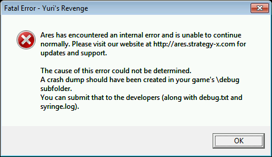

Ares Documentation
Show Ares 0.1 documentation
Show Ares 0.2 documentation
Table of Contents
Due to the length of the TOC, it is hidden by default. Click here to expand it.
A note on Headers
Clicking on the bold print headers (IE "Introduction", "Type 1 Fixes", "Iron Curtain Effect", etc) will allow the reader to collapse the section immediately below. To reexpand, simply click the desired header again. Note that collapsing a large section header will collapse everything below it as well. Conversely, expanding a section will also expand all sections below it.
Introduction
Ares is the new tool to extend the capabilities of Yuri's Revenge. It was conceived by pd near the end of 2007, and is currently in an early development and testing cycle.
This documentation is aimed primarily at Ares testers, as Ares is a work in progress and subject to many further changes. However, the documentation is also aimed at mod authors wishing to make use of the new functionality that Ares offers.
Ares is incorporated into Yuri's Revenge via the use of Syringe, a program developed by pd to 'inject' DLL code into a running executable without modifying the executable itself. In this case, the Ares DLL is injected into the Yuri's Revenge 1.001 main executable, gamemd.exe.
Syringe can be run directly via a command line prompt, or automatically using Launch Base. See the respective documentations of those programs for further details.
Compatibility Notes
RockPatch/NPatch
Ares is not intended to be used in conjunction with any third party patch that modifies the executable of the game. This is due to fairly obvious technical reasons that were best summarized by Renegade: [paraphrase] You can't use the USA maps on your GPS to navigate through Russia.
...because sooner or later you will drive down a road that doesn't exist, and off a cliff.
Comodo Internet Security
Comodo has been reported as being a problem multiple times. It seems that this particular program has a strong dislike for programs that alter other programs. Normally, this is a good thing, but Ares works with a program called Syringe, which is a program that alters other programs. Be advised that issues may be encountered. A solution can be found here.
Known Major Issues
Save Games
For the same reasons, Ares does not support loading save games or scripted IPB videos that were created with any other version of the game than the very same version of Ares (not even the original Yuri's Revenge save games are supported).
NB: Unfortunately, for the moment, save games are not functional at all in Ares. This is a known problem that will be fixed in the future - Ares will eventually be able to load games that were saved using [the exact same version of] Ares.
NB: As of July 2011, this issue has been targeted to 1.0 due to its complexity and lack of interest in the issue.
Known Minor Issues
- The
SolidHeight/Solid Buildings functionality does not work with invisible projectiles yet. (Issue #888) - There remains an upper limit, 74, on the number of units that can be displayed per construction tab on the UI bar. Going over this results in a frozen game.(Issue #1416)
The Whiteboy Bug
Bug Fixes
Ares provides three types of bug fixes:
- Fixes to genuine bugs in the original, unmodded Yuri's Revenge 1.001, which cannot be fixed simply by modifying INI files or graphics (like the UMP does).
- Fixes to logic that goes unused in the unmodded game, or at least not used to its full capabilities – i.e. game logic that often does not work as expected when used in mods.
[This section might have included logic that existed in Tiberian Sun but was removed by Yuri's Revenge 1.001, however we have dedicated a whole separate chapter to restored Tiberian Sun logic.] - Corrections and enhancements to code efficiency that reduce loading times and in-game lag without affecting gameplay mechanics. Also hardware/operating system related crashes.
Type 1 Fixes (Original Bugs)
Temporal Warheads Earn Experience By Killing Friendly Units
When a unit kills an enemy unit it gains experience, which can lead to that unit becoming veteran or elite. Killing friendly units (your own or your allies') does not earn experience in this way.
However, Temporal warheads (warheads with Temporal=yes set) did use to earn experience when killing friendly units. This is no longer the case. Temporal warheads no longer gain experience when used against allies
Introduced in version: 0.1
Prism Support Bugs
-
Whenever a game mode or map declared the
[General]section without re-stating thePrismSupportModifier, thePrismSupportModifierfrom rulesmd.ini would get multiplied by 100, thus causing supported Prism Towers to deal extremely high damage. This bug is now fixed. It should be noted that several official maps which used to exhibit this bug were already 'fixed' by the UMP by re-statingPrismSupportModifier=150%in each affected map. As a result of the UMP fixes, these maps are now set at the original 150%, regardless of what your mod may set it to. If you want to change this then you should manually override the global modifier via Ares' new Prism Forwarding logic. This can be done simply by adding a single flag to the Prism Tower:
[ATESLA]►PrismForwarding.SupportModifier=whateverPrism support modifier fixed for game modes/maps.
- Once a Prism Tower had decided to support another, the firing tower gained that tower's benefit. If the supporting tower was destroyed or otherwise incapacitated, the firing tower would still get the full benefit of that tower, even though there are no visual effects drawn (and the supporting tower may even have started supporting another). Ares fixes this so that incapacitated supporting towers do not contribute to the firing tower. Lost prism supports no longer contribute to the firing beam.
- Prism Towers could be made to support another during their construction or selling phases. This caused graphical glitches with the tower. Ares prevents these towers from supporting others. Constructing/selling Prism Towers are no longer eligible to be support towers.
Introduced in version: 0.2
Frozen Mutation (MakeInfantry) Animations
Infantry killed by a mutation warhead appear to transform into another InfantryType. Internally this is achieved by playing an animation, upon completion of which a new infantry unit is spawned. If the cell where the new infantry is to be spawned is already occupied then the animation will pause on the final frame until the obstacle is cleared. The original game would allocate memory for the new infantry on every frame but would fail to de-allocate that memory when the infantry could not be placed. The more time that passes with the animation in this state, the worse the memory leak gets – resulting in the game eventually grinding to a halt. Ares fixes this by simply deleting the animation if the new infantry unit cannot be spawned.Stuck mutation animations are deleted (thus preventing a memory leak)
Introduced in version: 0.1
Misleading Veteran Naval Cameos
When you infiltrate an enemy War Factory, any [trainable] VehicleTypes' (not AircraftTypes) cameos (build icons) will gain the veteran symbol, indicating that they will start veteran when built. However, only vehicles built from a War Factory will actually start veteran, not vehicles built from a Naval Yard. Ares ensures that only the vehicles that will actually start veteran gain the veteran symbol for their cameos.Spying a war factory will not give you veteran build icons for naval units incorrectly.
Introduced in version: 0.1
Secret Lab Boon Weighting
The random weighting of each possible Secret Lab boon was not calculated correctly – the later a boon appeared in the list the less likely it was to appear in-game. For example, if the Grand Cannon were not picked as the boon for the first Secret Lab on the map (probability 1/8) then it could not be picked for any of the other Secret Labs. This has been fixed such that every Secret Lab will pick its boon completely at random, independently of other Secret Labs on the map.Secret lab boons are picked truly at random.
Introduced in version: 0.1
Too Many Secret Labs
If there were more Secret Labs on the map than there were possible boons then all of the Secret Labs would be 'empty'. This has been fixed such that every Secret Lab will pick its boon completely at random, independently of other Secret Labs on the map.Too many secret labs on a map would cause them all to be empty. Not anymore.
Introduced in version: 0.1
AI Targeting Cloaked Objects With Major Super Weapons
When AI controlled Super weapons with Type=WeatherStorm or Type=Nuke picked their target, they failed to ignore cloaked objects (such as Submarines) and, as a result, sometimes selected them as targets, ruining the appearance of fair play. Cloaked objects are no longer considered as targets for these super weapons.AI will not use weather storms or nukes on cloaked units.
Introduced in version: 0.1
Enemy Harvester Guard Mode Exploit
It was possible to issue the 'guard mode' order to enemy harvesters as if they were your own units. Players unaware of this exploit would find their economy crippled when facing an unscrupulous player. It is no longer possible to issue the guard mode order to enemy harvesters."Enemy harvester guard mode" exploit no longer works.
Introduced in version: 0.1
Parasites In Airborne Units
If a parasite (e.g. Terror Drone) entered a unit that can fly (e.g. Nighthawk) and that unit was destroyed by the parasite whilst airborne then the parasite would appear, unscathed, on the ground beneath the destroyed unit. In Ares, the parasite will instead appear at the same height as the destroyed airborne unit and fall to the ground - where it will be destroyed by the impact.Parasites that destroy an airborne unit will fall to the ground and be destroyed too.
Introduced in version: 0.1
Warhead Verses' Special Values
The Verses flag (which is used on warheads to manipulate the damage dealt versus different armor types) has three special-case values used to define additional behavior:
- 0% means no force fire, no retaliate, no passive acquire
- 1% means no retaliate, no passive acquire
- 2% means no passive acquire
However, a bug with the way the floating-point values are compared means that these behaviors were not always applied consistently. Ares fixes this bug so the behavior should always be consistent now.
The special behaviors can also now be toggled independently of the Verses value (see Additional ArmorTypes and Verses).Warhead verses special values (0%/1%/2%) should now apply their behavior consistently.
Introduced in version: 0.1
Unit Sounds Played At Inappropriate Times
When a unit was pulled by a Magnetron it would play its MoveSound, even though it was not moving under its own power. Now, this sound will only be played when the unit moves under its own power.Units pulled by a Magnetron will on longer play their move sound.
Introduced in version: 0.1
Load Screen Colors
Westwood did not update the code that selects the load screen text color for Yuri's Revenge. The original campaigns always used red no matter what faction you played as. For the multiplayer game modes, everything that was not Allied got red, too. Ares selects these values: Allies get blue for campaigns and Yuri gets purple in multiplayer.Dedicated load screen text colors for each faction.
Introduced in version: 0.2
Animated Super Weapon Cursor
Several super weapon cursors contain multiple frames but only display the first one. Ares enables these animations for the paradrop, chronoshift and iron curtain cursors.Several super weapon cursor animations enabled.
Introduced in version: 0.2
Chronoshift Will Sink Jumpjet Units
If a jumpjet unit with SpeedType=Hover like the Nighthawk or the deployed Siege Chopper was chronoshifted into water it originally would not sink. The unit would even be able to take off unharmed. Ares will let these jumpjet units sink.Jumpjet units will sink when chronoshifted into water.
Introduced in version: 0.2
Temporal Warheads and Potential Occupation Targets
If a player ordered infantry to occupy a neutral structure, and the building was erased with a Temporal warhead before the potential occupiers could arrive, an Internal Error would occur. Ares fixes this behavior so that erasing the structure will no longer trigger an error.Temporal Warheads and potential occupation targets.
Introduced in version: 0.2
Firing Voices and Veterancy
Yuri's Revenge uses different unit voice lists for firing weapons (VoicePrimaryWeaponAttack, VoicePrimaryEliteWeaponAttack, VoiceSecondaryWeaponAttack and VoiceSecondaryEliteWeaponAttack). If the *EliteWeaponAttack list is empty, VoiceAttack is used instead of the more appropriate non-elite version *WeaponAttack. This behavior makes units like Boris, Magnetrons, Siege Choppers, Boomers and Floating Discs lose their special voices once they become elite. Ares falls back to the non-elite weapon firing voices instead of using the generic VoiceAttack ones.
Introduced in version: 0.2
Units won't lose their special weapon firing voices once they become elite.Type 2 Fixes (Mod Logics)
Unit Sounds Played At Inappropriate Times
When an InfantryType with MovementZone=AmphibiousDestroyer was carried between water and land inside an 'open topped' vehicle (e.g. a Nighthawk converted into a flying Battle Fortress), their EnterWaterSound/ExitWaterSound would be played. Now, these sounds will only be played when the InfantryType themselves physically enters/leaves water.
Introduced in version: 0.1
Buildable Secret Labs
Secret Lab boons were picked on map load so if a Secret Lab were not pre-placed on the map then it would not provide a boon. With Ares, Secret Labs constructed by a player will randomly pick a boon that that player could not build at the time the Secret Lab was placed.Buildable secret labs will now have a boon.
Introduced in version: 0.1
Buildable Construction Yards
Construction Yards that were made buildable from the sidebar would cause an Internal Error if the player started construction of one and then cancelled it. This error no longer occurs.Buildable construction yards no longer cause an IE when canceled.
Introduced in version: 0.1
Animation Damage Warheads
Animations may have appeared to deal damage randomly rather than based on the warhead specified. In fact, animations were hard-coded to deal damage using the warhead specified by [CombatDamage]►FlameDamage2, unless the animation ID was [INVISO], in which case the warhead used was [CombatDamage]►C4Warhead. With Ares, the [Animation]►Warhead= flag will be adhered to, with the aforementioned warheads used as the default if [Animation]►Warhead is not specified.Animations' warhead flag now works.Warhead=
Introduced in version: 0.1
Initial Veteran Cameos
When you infiltrate, say, an enemy Barracks, any [trainable] infantry that you subsequently build will start veteran. The infantry's cameos (build icons) will gain the veteran symbol to indicate this. However, if the country you are playing as has any units that always 'start veteran' then those units did not gain the veteran symbol for their cameos. Now they do.Units that start veteran as a country-specific bonus will now have veteran build icons.
Introduced in version: 0.1
Units overpowering buildings
Tesla Troopers, for example, can overpower Tesla Coils to make them fire a more powerful weapon. If the same logic were applied to vehicles (for example, the Tesla Tank), to make them overpower buildings in the same way, then the overpowering weapon of the vehicle would fire but would not, in fact, overpower the building. Now vehicles can overpower buildings properly.Vehicles can overpower buildings.
Introduced in version: 0.1
OpenTopped Transports Do Not Decloak To Fire
If a passenger inside an 'open topped' vehicle (e.g. the Battle Fortress) fired a weapon with DecloakToFire=yes set then the open topped vehicle (if it were cloaked) would not decloak when the weapon was fired. Now it will.OpenTopped transports will decloak to fire when their passengers fire.
Introduced in version: 0.1
RadBeams And Waves Using The Wrong FLH
The weapon effects of Radiation Beams and Waves (Sonic and Magnetron Beams) would always get drawn from the FLH of the firing unit's current primary weapon rather than from the FLH of the weapon that actually fired the beam/wave. Now the weapon effects will be drawn using the correct FLH.
Note that the Magnetron does not have a SecondaryFireFLH set in the unmodded game, so any mod using Ares will need to set this themselves. You may also need to correct the FLHs for the IFV.RadBeams and waves will use the correct FLH (instead of always using PrimaryFLH).
Introduced in version: 0.1
Sonic Wave Ambient Damage
The Warhead and AmbientDamage settings used when applying ambient damage from a sonic weapon were always taken from the unit's current primary weapon rather than the weapon that actually fired the wave. Now these settings are taken from the weapon that fired the wave.Sonic wave ambient damage comes from the correct weapon (instead of always Primary).
Introduced in version: 0.1
Ivan Bombs Can Only Be Fired By InfantryTypes
If an Ivan Bomb weapon was given to any unit other than an InfantryType then the weapon would fire but the Ivan Bomb would not actually get attached to the target. Now Ivan Bombs can be fired by VehicleTypes, AircraftTypes and BuildingTypes as well.
NB: BuildingTypes do not get the Dynamite cursor.Ivan bombs can be fired by any unit (instead of just infantry).
Introduced in version: 0.1
BuildingType Upgrades Are Not Viable Prerequisites
Before Ares, upgrades did not appear to work as prerequisites – if you had the upgrade, you still didn't satisfy the prerequisite. In fact, only the most recently constructed BuildingType would be checked to see if it had the upgrade. With Ares, all upgrades on all BuildingTypes are eligible to satisfy any prerequisite logic that a normal BuildingType can.
In addition, upgrades can now satisfy a super weapon's AuxBuilding.Building upgrades can now be used as prerequisites.
Introduced in version: 0.1
Custom Palettes
The original game supports custom palettes on TechnoTypes using Palette= (filename, excluding .pal extension) on the TechnoType's entry in artmd.ini. However, the game would crash (with the message "You have violated the limit of having only one extra building Palette" in the (non-existent) log file) if you used the Palette flag more than once. And, of course, the one extra palette was already in use on the Statue of Liberty. Ares removes this limit and lets you use custom palettes on all TechnoTypes to your heart's content.
NB: It is not known why this apparently arbitrary limit on custom palettes was in place – it may have been there to mask a bug that we don't yet know about.Units can specify a custom palette.
Introduced in version: 0.1
Factory Load Sharing
If you had queued up a lot of vehicles such that the primary factory could not cope with the rapid exit cycle then the game would search for alternative exits – other instances of the same BuildingType. In Ares this has been extended to search for all BuildingTypes with the same Factory= and Naval= settings.
NB: This fix currently prevents the so-called 'kennel hack' from working.Factory load sharing for factories of the same type, rather than just the same ID.
Introduced in version: 0.1
New Construction Options
One cause of the NCO bug (where the EVA will announce "new construction options" when, in fact, there aren't any) was the game's failure to check if the player had the appropriate factory type to build the unit concerned (e.g. a VehicleType factory for VehicleTypes). Such a check will now take place, thus removing this cause of the NCO bug."New construction options" no longer announced if player does not have the correct factory type for a unit.
Introduced in version: 0.1
"Special" Weapons now function in secondary slots
Units with weapons that use MindControl=yes, Parasite=yes or Temporal=yes require special treatment behind-the-scenes in order to function. However, the original game only performed this treatment if those units had such weapons as their Primary weapon. The treatment would not be applied for Secondary weapons and thus result in crashes. Ares performs the treatment for Secondary weapons too.
NB: The 'special treatment' sets up the object wielding these weapons. However, the original code is not designed to handle an object having more than one weapon with 'special' functionality so it is not recommended to have multiple weapons with the same type of special functionality on a single object.Special weapons (mind-control/parasite/temporal) will now work in the Secondary slot.
Introduced in version: 0.1
DestroyAnims Don't Remap
The remappable parts of animations played via the use of the DestroyAnims= flag (when a building is destroyed) used to remain red in color – they would not get remapped to the owning player's house color. Now they will. Note that the games files already include suitable animations for some buildings, however some of these (the Allied Barracks and Prism Tower) use the red palette indexes rather than the remappable indexes so you will need to recolor the images.DestroyAnims can use remappable colors.
Introduced in version: 0.1
DestroyAnims Cause Reconnection Errors
The DestroyAnims= flag used to cause reconnection errors in multiplayer whenever it was used. This should not happen anymore.DestroyAnims don't cause reconnection errors anymore.
Introduced in version: 0.1
BuildingTypes and InfantryTypes Do Not Reload Ammo Properly
See ModEnc://Ammo for exact details of this problem. Put simply, ammo/reloading logic did not work properly on BuildingTypes or InfantryTypes and was essentially useless on those object types. Ares fixes this logic such that these object types will now reload their ammo properly. Note that AircraftTypes are hard-coded to require docking to reload.BuildingTypes and InfantryTypes Do Not Reload Ammo Properly
NB: There are two tags for which this does not work: Hospital= and Armory=. Normally, a building will use up its supply of ammo and then proceed to reload. Setting Hospital= and Armory= to yes will in effect disable the ability of that building to reload. After the building heals or promotes the number of units specified under Ammo=, the building will effectively be useless. This occurs even if the structure has a weapon set under Primary. In that circumstance, any combination of ammo used will contribute to the exhaustion of ammo without hope of reload.
Introduced in version: 0.1
Unit Instances Not Counting Towards BuildLimit
If you have a vehicle which deploys into a structure, both the deploying vehicle and the structure will now count towards the BuildLimit of that vehicle.Vehicles that deploy into a building now count towards the BuildLimit of that building, and vice versa.
Hijackers inside stolen vehicles now count towards the Hijacker's BuildLimit.Hijackers inside vehicles now count towards that hijacker's BuildLimit.
Introduced in version: 0.1
The 100-Unit Bug
There is no longer an upper limit on the InfantryTypes, VehicleTypes and AircraftTypes lists.
NB: The so-called Whiteboy Bug (where graphical glitches and even game freezing can occur when there are 74 or more cameos visible on the sidebar at the same time) has not been fixed.100-unit bug fixed for infantry, vehicles and aircraft (there's no longer a limit on these).
Introduced in version: 0.1
PKT Duplication
Multiple loose PKT files can now be used without their contents being duplicated (unless you duplicate the mapfilters, of course).Multiple loose PKT files no longer have their contents duplicated.
Introduced in version: 0.1
Overriding Missionsmd.pkt
You can now override the original missionsmd.pkt by placing your own version in an expandmd##.mix file (the game has been modified to load these files before langmd.mix).Missionsmd.pkt can now be overridden by your own version inside expandmd##.mix
Introduced in version: 0.1
Moving Alpha Lights
The original game includes a little-known flag that allows all ObjectTypes (anything placeable on the map - Projectiles, Trees, Overlays, Smudges (not the IsometricTileTypes), Aircraft, Infantry, Vehicles and Buildings) to have a lighting effect displayed on them.
[Object]►AlphaImage=ALPHATST instructs the game to display ALPHATST.shp on the object as a lighting effect. The SHP must be saved without any compression (just like mouse.sha).
Ares adds two improvements to this feature:
- The lighting effect will follow the object around as it moves, rather than staying where the object was created.Alpha lights will now move with the object they are attached too.
NB: Alpha Lights on moving objects are a potential source of lag. - If the SHP has multiple frames then it is interpreted as a multi-facing image, and the largest n frames in the image are used as facing-specific versions (in this case, n is the largest power of 2 that is less than or equal to the number of frames in the SHP, e.g. 2/4/8/16/32/64...)Alpha lights can now have multiple facings.
Introduced in version: 0.1
Mind-Controller Parasites
MC-parasites would draw a mind-control link between the mind-controlled unit and the point on the map where the parasite entered the unit. Now the link will not be drawn at all. You can also use MindControl.Permanent instead, in order to use the perma-mc animation.Mind-controller parasites will no longer draw the mind-control link when the the target is selected.
Introduced in version: 0.1
SpyPlane.Count Decoupled From AllyParaDropNum
If you set AllyParaDropNum= to a list of integers so as to send multiple InfantryTypes in the paradrop (and thus multiple paradrop planes) then the SpyPlane super weapon would also send the same number of planes as there were elements in that list. In Ares, the number of spy planes sent out is now specified by the super weapon's own SpyPlane.Count= flag (which defaults to 1).SpyPlane.Count decoupled from AllyParaDropNum.
Introduced in version: 0.1
DigSound
[AudioVisual]►DigSound= is used for both the global Nuke siren and the sound made when a subterranean unit (with Locomotor={4A582743-9839-11d1-B709-00A024DDAFD1}) digs into or emerges from the ground. With Ares, the super weapon can specify its own SW.ActivationSound= (which defaults to [AudioVisual]►DigSound= for nukes).Nuke super weapons can be overridden to use a sound other than DigSound for their siren.
Introduced in version: 0.1
Jumpjet Shadows
If a Jumpjet vehicle uses SHP-based imagery then the shadow would only be drawn when the unit was at rest on the ground or if Turret=yes were set (and then the shadow would appear directly underneath the unit instead of on the ground). Now the shadow will always be drawn correctly on the ground.Shadows on jumpjet units will now be drawn correctly when the unit is airborne.
Introduced in version: 0.1
Vehicle Paradrop Offset
Passengers of AircraftTypes get paradropped out if the AircraftType fires its weapon. The passengers would always use the infantry sub-cell positions for where they would be spawned, even if the passenger were not an InfantryType. This ultimately meant that vehicles would appear to fall part-way into the ground upon landing. This error no longer happens in Ares.
(The same problem also used to occur with vehicles paradropped from aircraft with Carryall=yes set.)Vehicles that are paradropped will now be centered correctly on the cell they land on, rather than being offset.
Introduced in version: 0.1
Air-To-Air Combat
Anti-air weapons (where the projectile has AA=yes set) could not be used by AircraftTypes – aircraft simply would not attack other airborne units. Now, anti-air weapons work just fine on aircraft. No additional flags are required.Aircraft can now attack other aircraft if given a weapon with an AA=yes projectile.
Introduced in version: 0.1
BaseUnit
[General]►BaseUnit= specifies the list of VehicleTypes that are considered to be MCVs. Only the first 3 entries of this list were recognized by the game, which means that additional sides would never be playable in non-Short Games (among other limitations). Ares removes this limit so all entries in the list are now recognized.BaseUnit= can now hold more than 3 vehicles.
Introduced in version: 0.1
BuildConst
If you get into low power then the EVA will announce 'low power', but only if you have one of the first 3 buildings from the [AI]►BuildConst= list. With Ares, you'll get the EVA announcement if you have any building from the list."Low power" announcement used to occur only if you owned one of the first 3 buildings from BuildConst=. This now works if you have any building on the list.
Introduced in version: 0.1
Infantry Lost In Special Function Buildings
Infantry sent into an Armory or old-style Tech Hospital emerge a few moments later, having had the relevant benefit applied (e.g. promotion or healing). However, if the building were destroyed, sold or undeployed whilst the InfantryType were still inside then that InfantryType would remain in 'limbo' whilst still counting towards the owning player's units (e.g. defeat conditions, build limit, etc). Ares will make sure that such InfantryTypes are ejected from the building in those situations.Infantry still inside a Hospital or Armory when it is destroyed/sold may go into limbo instead of emerging, meaning that they still count towards the player's units. Now they will emerge.
Introduced in version: 0.1
Multiple AI Factories Clone Units
If the AI were modified to build multiple factories of the same type then every time they built a unit from that factory type they would produce a copy of that unit from every additional factory. For example, if the AI were made to build a second War Factory then they would get a second copy of every vehicle they build. This behavior is disabled by default in Ares, although a flag has been added to allow mod authors to turn it back on if they really want to:
- [GlobalControls]►AllowParallelAIQueues= (boolean)
- Set this to yes to re-enable AI factory cloning.
Introduced in version: 0.1
Alternate Theater Art For BuildingTypes
BuildingTypes whose artmd.ini entry has NewTheater=yes set would have the second letter of their SHP filenames replaced by another letter, depending on the theater of the current map. For example, GAWEAP uses SHP files named GAWEAP* on arctic maps, GTWEAP* on temperate maps, GDWEAP* on desert maps and so on. In the event that a SHP file with the appropriate filename does not exist, the game falls back to GGWEAP*.
However, in Yuri's Revenge this filename-adjusting logic only works for BuildingTypes whose Image ID starts with G, N, Y or C. Ares extends this logic to work for Image IDs starting with any letter (A-Z or a-z).
Introduced in version: 0.2
Amphibious Objects Sink When Chronoshifted Onto Water
When an amphibious (not hover) object - that is, one that can normally enter water cells without problem - was chronoshifted onto water by the Chrono Sphere, it would sink. Ares corrects this so that all amphibious objects can be chronoshifted onto water without sinking.Amphibious objects no longer sink when chronoshifted onto water.
Temporal Warheads Still Affect Objects That Are Not Warpable
Attacking a unit with a Temporal=yes warhead when it should not be susceptible due to having Warpable=no set, could still experience some negative effects. Units that were mind-controlled by the unwarpable unit would be freed and aircraft-spawners would have those aircraft destroyed. Unwarpable units are no longer affected in this manner. Temporal warheads no longer affect objects that are not Warpable
Hardcoded Wall/Gate Interactions
In Tiberian Sun you could place buildable gates on top of existing walls. This logic still exists in Yuri's Revenge. However, the logic was hardcoded to only work with GAWALL and NAWALL, so it wouldn't work with Yuri's wall (YAWALL) or, indeed, any other walls you might add to the game. Ares changes this so that all overlays with Wall=yes set can have gates "slammed" onto them.
NB: The automatic joining of walls to the gates still only works for GAWALL and NAWALL however this will be fixed in future.Gates can be slammed onto any walls, not just GAWALL or NAWALL.
Remappable Walls
Walls (i.e. OverlayTypes with Wall=yes) always use the same colour in place of the remap for all players, regardless of the owning player's colour. Ares will instead draw walls' remappable sections in their respective owner's colours.Walls remap to the owning player's colour.
Introduced in version: 0.2
Mirage Logic with Turrets/Barrels
In Yuri's Revenge, using the Mirage disguise logic on a VehicleType with Turret=yes would result in the vehicle's turret not being disguised. Ares fixes this behaviour so that associated turrets and barrels will be disguised along with the unit's body..
Introduced in version: 0.2
Turrets and barrels will be disguised with the unit.Negatively Damaging Weapons with AnimList
Weapons that contain a negative Damage flag, and have AnimList specified on their associated warheads, would cause an Internal Error upon firing. This no longer happens in Ares.
Introduced in version: 0.2
Negatively Damaging Weapons with AnimList tags on their warheads will no longer cause errors.AircraftTypes and Railguns
AircraftTypes with IsRailgun=yes weapons would cause Internal Errors when they destroy their intended target. This no longer happens in Ares.
Introduced in version: 0.2
AircraftTypes can now use railguns without causing Internal Errors.Cloakable AircraftTypes and BuildingTypes
Until now, AircraftTypes and BuildingTypes have ignored the existence of Cloakable=yes. Now, if this tag is included on the entry of a BuildingType or AircraftType, it will cloak.
Note: AircraftTypes will decloak when told to attack, not once they are within firing range.
Introduced in version: 0.2
AircraftTypes and BuildingTypes can now be cloakable.Summoned Airstrikes no longer dependent on SovParaDropInf
If a you were to remove the SovParaDropInf tag from [General], then summoned Airstrikes such as Boris' weapon will trigger an Internal Error when fired. This no longer happens in Ares.
Introduced in version: 0.2
Summoned Airstrikes are no longer dependent on the SovParaDropInf tag.Hijackers are reimbursed when a unit is grinded
If you send a hijacked unit into a grinder, you will get a refund for the vehicle thief also. Originally, Yuri's Revenge did not consider the hijacker.
Introduced in version: 0.2
Hijackers are reimbursed when a unit is grinded.Reinforcements and Multiplayer Map Triggers
Using the Player@X logic, Yuri's Revenge would also try to reinforce players that don't exist, which leads to a crash. When using Reinforcement, Reinforcement at Waypoint and Reinforcement by Chrono, Ares will only create a team if the player exists on the map.
Introduced in version: 0.2
Only existing players will receive reinforcements in multiplayer games.Type 3 Fixes (Performance)
- pips.shp was getting reloaded from disk six times in a row.
- A commonly used function, ObjectClass::GetCell, performed the same tasks twice.
- During startup, many superfluous calls were made to the debug log file writer.
- Random Map Generator time has been greatly reduced (much time was wasted by redrawing the minimap multiple times during a map's generation).
- Some particularly fast CPUs could cause the game to crash on startup.
- There exists a version of ddraw.dll that is often touted as improving the performance of Yuri's Revenge. This "magic" DLL forces DirectDraw into software emulation mode, which doesn't use any hardware accelerated GPU functionality. This means special effects that are not emulated are simply omitted, potentially improving performance. Ares uses software emulation mode by default, making this DLL unnecessary. However, Windows Vista and Windows 7 come with DirectX 10 - which does not support software emulation - so Ares will not default to software emulation mode on those versions of Windows (otherwise users would just get a completely black screen).
Introduced in version: 0.1
Restored Tiberian Sun Logic
The Yuri's Revenge engine is based on the Red Alert 2 engine, which, in turn, is based on the Tiberian Sun engine.
Various features that existed in Tiberian Sun were removed in Red Alert 2, and further features were removed in Yuri's Revenge and in the 1.001 patch.
The extent to which these features no longer exist in Yuri's Revenge 1.001 varies, from not functioning correctly to complete removal of the logic (sometimes because simply using the logic causes an Internal Error).
Below is a list of the features that Ares has restored, along with any changes or enhancements to the way those features used to work in Tiberian Sun.
Note that, in many cases, Ares has drastically changed the way these features are implemented.
EMP
Vehicles affected by EMP (Electromagnetic Pulse) are paralyzed in a similar manner to a Chrono Legionnaire erasing a unit. Unlike the Chrono Legionnaire however, EMP'd vehicles can still be attacked by other units.
EMP paralysis affects units and buildings in various ways (given they are not immune to EMP, see below):EMP weapons
- Primary effect: units will not respond to any commands. They will stop moving and will not attack anything.
- Hovering units (such as the Robot Tank) will land.
- Units display the animation specified by
[General]►EMPulseSparkles=EMP_FX01. Note that the emp_fx01.shp file that comes with Red Alert 2 is in the Tiberian Sun palette and needs to be converted. - Voxel-based units are darkened (SHP-based units are not).
- Buildings that can undeploy into vehicles (e.g. MCVs) still can, but the resulting vehicle will remain EMP'd until the effect wears off.
- Aircraft will immediately crash.
- Power plants cease to produce power.
- Factories will stop working.
- Base defenses will not be able to fire their weapon.
- Gap Generators will stop emitting radar gap.
- Laser Fence Posts will stop emitting laser fences.
- Robot Control Centers will stop working.
- Super weapon buildings will shut down and the super weapons themselves will stop charging, if they have
[SuperWeapon]►IsPowered=yesset. - Radar buildings will stop providing radar.
- SpySat buildings will stop to reveal the map.
- Units that spawn other units will cease to do so. If the spawner unit has launched any aircraft then the aircraft will immediately crash.
- Slave Miner slaves will stop working.
- Units that are in their unloading state (such as ore harvesters depositing ore or Siege Choppers transforming) will only become EMP'd once they have finished unloading.
- Harvesters that were in the middle of harvesting when hit by EMP will resume harvesting after EMP wears off.
Quickstart: If you want a warhead to EMP a target for ten seconds, set EMP.Duration=150 on the warhead.
NB: Tiberian Sun used the weapon's Damage flag to determine how long the EMP effect would last. Ares, however, uses 2 new flags (EMP.Duration and EMP.Cap) to provide greater control. The weapon's Damage will be delivered independently from EMP paralysis (so a weapon can both damage and paralyze its target). Tiberian Sun also used the flag EMEffect=yes, which is not used in Ares.
- [Warhead]►EMP.Duration= (integer – frames)
[Warhead]►EMP.Cap= (integer – frames) - The above two flags are used together to determine how long (in frames) the affected units will be EMP'd for.EMP.Duration=EMP.Cap=
The game keeps track of how much longer each unit will remain paralyzed. Each unit essentially has a hidden EMP counter that counts down frame by frame until it reaches zero, at which point the unit will be re-activated. This counter is what gets modified by EMP warheads.
A unit does not get affected by EMP if Verses is equal to 0%, otherwise the target is endowed with the full effect.
First we will look at positive EMP.Duration – the targets are going to be paralyzed.
EMP.Capis greater than zero.
Makes this EMP effect stackable, but capped.
The target's EMP counter is increased byEMP.Durationup to but not exceedingEMP.Cap.
If the target's EMP counter is already greater thanEMP.Cap(e.g. caused by some other EMP weapon) then it will not be reduced.
Examples:
EMP counter is 0,EMP.Duration=10,EMP.Cap=20. Result: EMP counter will be set to 10.
EMP counter is 15,EMP.Duration=10,EMP.Cap=20. Result: EMP counter will be set to 20.
EMP counter is 60,EMP.Duration=10,EMP.Cap=20. EMP counter will remain at 60.EMP.Cap=0
Makes this EMP effect stackable, but uncapped.
The target's EMP counter is incremented byEMP.Duration, without limit.
This is Ares legacy behavior (before theEMP.Capflag was added).
Example:
EMP counter is 25,EMP.Duration=10. Result: EMP counter will be set to 35.EMP.Cap=-1
The target's EMP counter is set to the exact number of frames specified byEMP.Duration, unless the target's EMP counter is already greater than this.
Examples:
EMP counter is 5,EMP.Duration=10. Result: EMP counter will be set to 10.
EMP counter is 20,EMP.Duration=10. EMP counter will remain at 20.
Next we will look at negative EMP.Duration – for example, a friendly unit trying to re-activate the already-paralyzed unit.
EMP.Cap=-1
The target's EMP counter is reduced by the number of frames specified byEMP.Duration.
Examples:
EMP counter is 50,EMP.Duration=10. Result: EMP counter will be set to 40.
EMP counter is 7,EMP.Duration=10. Result: EMP counter will be set to zero and the unit will re-activate.EMP.Capis greater than zero.
The target's EMP counter is reduced by the number of frames specified byEMP.Duration. If this value is still greater thanEMP.Capthen the EMP counter is reduced further so that it is equal toEMP.Cap.
Examples:
EMP counter is 50,EMP.Duration=10,EMP.Cap=70. Result: EMP counter will be set to 40.
EMP counter is 50,EMP.Duration=10,EMP.Cap=20. Result: EMP counter will be set to 20.
EMP counter is 7,EMP.Duration=10. Result: EMP counter will be set to zero and the unit will re-activate.EMP.Cap=0
EMP.Durationis irrelevant. The EMP counter will be set to zero and the unit will re-activate.
Quickstart: If you want a unit to be immune to EMP, set ImmuneToEMP=yes on the unit.
- [TechnoType]►ImmuneToEMP= (boolean)
-
The above flag specifies whether or not the TechnoType is immune to the effects of EMP. The default immunity status is determined based on the following rules:
-
BuildingTypes:
ImmuneToEMPdefaults to no for BuildingTypes that havePowered=yesand a negativePower=value set.
ImmuneToEMPdefaults to no for BuildingTypes that provide one or more of the following special functions:
- Radar
- Super weapons
- Undeploy into a vehicle (e.g. Construction Yards)
- Powers vehicles (e.g. Robot Control Centre)
- Gap Generator
- Sensors
- Laser Fence Posts
ImmuneToEMPdefaults to yes for all other BuildingTypes. For instance, power plants and pillboxes are immune to EMP by default, as well as SpySat buildings and factories. -
InfantryTypes:
ImmuneToEMPdefaults to yes for InfantryTypes unlessCyborg=yesis set (in which case,ImmuneToEMPdefaults to no). -
VehicleTypes and AircraftTypes:
ImmuneToEMPdefaults to no for VehicleTypes and AircraftTypes unlessOrganic=yesis set (in which case,ImmuneToEMPdefaults to yes).
Manually settingImmuneToEMPalways overrides the default.
EMP immunity can also be granted via the new veteran/elite ability "EMPIMMUNE". Just setVeteranAbilities=EMPIMMUNEorEliteAbilities=EMPIMMUNEon the TechnoType.
EMP immunity also respectsTypeImmune,AffectsAlliesandAffectsEnemieson the warhead. ImmuneToEMP= -
BuildingTypes:
- [TechnoType]►EMP.Modifier= (multiplier)
- If the EMP effect duration is positive it will be multiplied by this factor. You can create units that are more or less prone to the Electromagnetic Pulse.
EMP.Modifierdefaults to100%.EMP.Modifier=
See Destroy Units by EMP to learn how to crash flying TechnoTypes.
Introduced in version: 0.1
Action=SellUnit
In Tiberian Sun you could sell units that were docked with a structure by using the normal Sell button on the sidebar. In Yuri's Revenge, a super weapon with Action=SellUnit achieves the same function. However, if such a super weapon were fired on a unit inside a Tank Bunker then an Internal Error would occur (sometimes this would be delayed until the destruction of the Tank Bunker). Ares prevents the error occurring.SellUnit super weapon no longer causes IEs with Tank Bunker.
Introduced in version: 0.1
Action=TogglePower
In Tiberian Sun there was a button on the sidebar that allowed players to turn their own buildings on and off and in low power situations. In Yuri's Revenge, a super weapon with Action=TogglePower achieves the same function. However, if such a super weapon were fired into an empty cell then an Internal Error would occur. Ares prevents the error occurring.An Action=TogglePower super weapon no longer causes IE when targetting an empty cell.
Introduced in version: 0.1
Spotlights
Spotlights would cause an Internal Error whenever they were created. The error no longer occurs so spotlights can now be used.Spotlights
- [Unit]►HasSpotlight= (boolean)
- If set to yes, creates a spotlight from the unit (note that this is now available to all of the Big Four types, not just BuildingTypes). When attached to a BuildingType, the spotlight still behaves like it used to, just circling around, but when it is attached to a different unit type, such as a VehicleType, it is fixed to shine straight ahead.HasSpotlight=
- [Unit]►Spotlight.StartHeight= (integer - leptons)
- Specifies the number of leptons above the ground at which the spotlight will be generated. Defaults to 250.Spotlight.StartHeight=
- [Unit]►Spotlight.Distance= (integer - leptons)
- The number of leptons ahead of the unit where the spotlight will reach the ground. Defaults to 1024.Spotlight.Distance=
- [Unit]►Spotlight.AttachedTo= (enumeration - one of body|turret|barrel)
- The part of the unit that the spotlight will align to in regards to facing. If set to "body" then the spotlight will be pointed in the direction the unit's body is facing, if set to "turret" then the spotlight will be pointed in the direction the unit's turret is facing. Does not work on BuildingTypes. Defaults to body.Spotlight.AttachedTo=
- [Unit]►Spotlight.DisableRed= (boolean)
- If set to yes then the spotlight will not emit any red light. Defaults to no.Spotlight.DisableRed=
- [Unit]►Spotlight.DisableGreen= (boolean)
- If set to yes then the spotlight will not emit any green light. Defaults to no.Spotlight.DisableGreen=
- [Unit]►Spotlight.DisableBlue= (boolean)
- If set to yes then the spotlight will not emit any blue light. Defaults to no.Spotlight.DisableBlue=
- [Unit]►Spotlight.DisableColor= (boolean)
- If set to yes then the spotlight will paint the ground darker, instead of brighter, and the disable red/green/blue flags mentioned above will be ignored.Spotlight.DisableColor=
Introduced in version: 0.1
Laser Fences
Laser Fences used to work in Red Alert 2 and Yuri's Revenge 1.000 but stopped working with the arrival of the 1.001 patch, in that the 'lasers' never turned on (this appears to have been an incidental change and not something Westwood did intentionally).
Laser Fences now work just the same as they did in Tiberian Sun. You need a BuildingType with LaserFencePost=yes to act as a corner post, and another BuildingType with LaserFence=yes which will be placed in between the corner posts automatically (see the original building's SHP from Tiberian Sun to see how the art is controlled). These fences are impassable to ground objects and invulnerable to normal damage, but when a corner post is destroyed, the fences connected to it are lost. When the corner post loses power, the fences connected to it go offline and become freely passable. When the post regains power, the fences reactivate and any object unfortunate enough to be traversing them will be destroyed.Laser FencesLaserFence=LaserFencePost=
Introduced in version: 0.1
Firestorm Wall
The Firestorm Wall and super weapon can now be implemented in Yuri's Revenge.
See the New Super Weapon Types: Firestorm section) for details.
Introduced in version: 0.1
Amphibious Image Changes
In Tiberian Sun, the Amphibious APC would appear to sink into the water. This was achieved by changing the imagery from apc.vxl to apcw.vxl. With Ares, you can now specify:- [VehicleType]►WaterImage= (VehicleType)
Image=) to YYYY.shp or YYYY.vxl (defined by [WaterImage]►Image=) when in water, similar to UnloadingClass.Please note that SHP units cannot have a voxel WaterImage, and vice versa. The VehicleType has to be defined under
[VehicleTypes].
WaterImage=
Amphibious vehicles can change their image when moving between water/land.
Introduced in version: 0.1
Multi Engineer
Red Alert introduced a way to balance engineers. By being able to capture a building only if has been damaged already engineer rushes became a lot more difficult. If the building could not be captured the engineer would damage it instead. EngineerDamage is not present in Yuri's Revenge. Ares restores this feature. Multi Engineer.

- [General]►EngineerCaptureLevel= (float - level)
- Specifies the health level equal to or below the building has to be capture it. EngineerCaptureLevel=
- [General]►EngineerDamage= (float - percent)
- If the building can not be captured the engineer will damage it by this amount of its full health. EngineerDamage=
- [General]►EngineerAlwaysCaptureTech= (boolean)
- Specifies whether tech buildings can be captured no matter what their current health status is. EngineerAlwaysCaptureTech=
- [General]►EngineerDamageCursor.*= (Cursor)
- Specifies the cursor to indicate an engineer will only damage the building instead of capturing it. See Super weapon cursors Defaults to a previously unused detonator cursor.
Use sensible defaults. Generally, EngineerDamage should never be higher than EngineerCaptureLevel or there might be situations an engineer blows up the building to be captured.
See Multi Engineer Checkbox to enable the user to turn the Multi Engineer option on and off from the game menu. If the checkbox is not enabled, the game will force the settings defined in rulesmd.ini.
Introduced in version: 0.2
Multi Engineer Checkbox
Tiberian Sun lets the user enable and disable the Multi Engineer feature from the user interface. Ares restores this feature. If the user turns off Multi Engineer buildings can always be captured using an engineer, otherwise the settings in rulesmd.ini are used. Multi Engineer checkbox in Skirmish menu.

- [UISettings]►AllowMultiEngineer= (bool)
-
Specifies whether the user can turn the Multi Engineer feature on and off from the menu. Defaults to
no.
If the checkbox is not shown the settings in rulesmd.ini will be enforced. AllowMultiEngineer=
See Multi Engineer for more info on EngineerDamage and EngineerCaptureLevel.
NB: Currently only the skirmish menu supports changing the Multi Engineer option. This will be changed in the future to support network and online games as well.
Introduced in version: 0.2
New & Enhanced In-Game Logic
This chapter documents all the completely new features that have been added to the game.
Sides & Countries
In the original game the sides and countries were, for the most part, hard-coded. You could not add to, remove or reorder the 10 countries or 3 sides. Ares, however, makes these tasks possible – you can now have up to 16? countries and 16 sides, and you can customize these in numerous ways...New sides & countries (including numerous enhancements).
Countries
Countries are specified in the [Countries] list in rulesmd.ini. Any country with Multiplay=yes set will appear in the country selection drop-down list and be eligible for random selection if the player chooses 'Random'.Countries can be excluded from the 'random country' option, or given differing weights.
The [Countries] list can contain up to 32 countries, however taunts will only work for 16 of these.
Each country can be customized using the following flags in the country's INI section:
NB: The following filename specifications (where raw C-style format specifiers like %s are required) are going to be changed into safer versions in the future. The replacement style has not been decided yet.
- [Country]►File.Flag= (filename, including the .pcx extension)
- The PCX file to use for the country's flag, in the format "filename.pcx".File.Flag=
- [Country]►File.LoadScreen= (filename, including the .shp extension)
- The SHP file to use for the country's loading screen, in the format "filename%s.shp". The filename specified must include "
%s", which will be substituted for the current screen width (640 or 800 pixels). For example,File.LoadScreen=ls%susstates.shpwill make the game load ls800usstates.shp.File.LoadScreen= - [Country]►File.LoadScreenPAL= (filename, including the .pal extension)
- The palette file to use for the country's loading screen, in the format "filename.pal".File.LoadScreenPAL=
- [Country]►File.Taunt= (filename, including the Taunts\ directory and .wav extension)
- Path of the files to use for the country's taunts, in the format "Taunts\filename%02i.wav". The filename specified must include "
%02i", which will be substituted for the taunt ID (01 through 08). For example,File.Taunt=Taunts\tauam%02i.wavwill make the game load tauntstauam01.wavthroughtauam08.wav.
NB: Taunts will only be registered for up to 16 countries.File.Taunt= - [Country]►LoadScreenText.Name= (CSF label)
- Name of the country, displayed on the loading screen (where a map of the country is usually shown). For example,
LoadScreenText.Name=Name:Americans.LoadScreenText.Name= - [Country]►LoadScreenText.SpecialName= (CSF label)
- Name of the country's special weapon, displayed on the loading screen. For example,
LoadScreenText.SpecialName=Name:apara.LoadScreenText.SpecialName= - [Country]►LoadScreenText.Brief= (CSF label)
- Description of the country and its special weapon, displayed on the loading screen. For example,
LoadScreenText.Brief=loadbrief:usa.LoadScreenText.Brief= - [Country]►LoadScreenText.Color= (Color scheme)
- Text on the multiplayer loading screens for this country will be drawn using this color from the
[Colors]enumeration. For example,LoadScreenText.Color=AlliedLoad.LoadScreenText.Color= - [Country]►MenuText.Status= (CSF label)
- Brief description of the country, displayed in the status bar of the country selection screen when the player mouse-overs that country in the country selection drop-down list.MenuText.Status=
- [Country]►RandomSelectionWeight= (integer)
- Specifies how likely it is that this country will be randomly selected when a player chooses 'Random'. The probability of this country being picked is calculated by dividing this country's
RandomSelectionWeightvalue by the sum of allMultiplay=yescountries' RandomSelectionWeight values. Defaults to 1.RandomSelectionWeight= - [Country]►ListIndex= (integer)
- Specifies which position this country should appear in the country dropdown list. If two or more countries use the same
ListIndex, the order is defined by their appearance in the[Countries]enumeration. Countries with negative values will not appear in the dropdown list; you can use this to effectively hide countries without having to change the[Countries]list and thus without risking game crashes. To also prevent such countries from being selected randomly, setRandomSelectionWeight=0. Defaults to 100.ListIndex= - [Country]►AI.PowerPlants= (list of BuildingTypes)
- A list of buildings that the AI will treat as this country's power plants.AI.PowerPlants=
- [Country]►ParaDrop.Types= (list of InfantryTypes and/or VehicleTypes)
- The units that will be paradropped by
Type=ParaDropsuper weapons (such as the one normally provided by a Tech Airport) for this country. Defaults to the corresponding side'sParaDrop.Types=.
NB: The original flags used to control the paradrop units only accept InfantryTypes. To include VehicleTypes in a paradrop you must use the new ParaDrop.Types and ParaDrop.Num flags.ParaDrop.Types= - [Country]►ParaDrop.Num= (list of integers)
- The quantity of each corresponding unit (listed against ParaDrop.Types) that will be paradropped. Defaults to the corresponding side's
ParaDrop.Num=.ParaDrop.Num= - [Country]►ParaDrop.Aircraft= (AircraftType)
- The aircraft type that will be used to deliver paradrops. Defaults to the corresponding side's
ParaDrop.Aircraft=.ParaDrop.Aircraft= - [Country]►Parachute.Anim= (Animation)
- This country's default parachute used if not overridden by a TechnoType. Defaults to the corresponding side's
Parachute.Anim=.Parachute.Anim=
Introduced in version: 0.1
Sides
Sides are specified in the [Sides] list in rulesmd.ini.
There is no limit to the number of sides that can be defined. However, only 16 fully-working countries can be implemented (see above).
Each side can (and should) define its own values for the following flags in the side's INI section:
- [Side]►DefaultDisguise= (InfantryType)
- Default InfantryType that disguisable infantry will be disguised as when first created.DefaultDisguise=
- [Side]►Crew= (InfantryType)
- The InfantryType that is spawned as a survivor when objects (with
Crewed=yesset) owned by this side are destroyed (or, in the case of buildings, sold)Crew= - [Side]►SurvivorDivisor= (integer)
- An object's refund amount is divided by this number to determine how many survivors will be spawned when this object is destroyed (or, in the case of buildings, sold).SurvivorDivisor=
- [Side]►AI.BaseDefenses= (list of BuildingTypes)
- List of base defense buildings that the AI can build.AI.BaseDefenses=
- [Side]►AI.BaseDefenseCounts= (list of integers)
- The maximum number of each corresponding base defense building (listed against
AI.BaseDefenses) that the AI can build.AI.BaseDefenseCounts= - [Side]►ParaDrop.Types= (list of InfantryTypes and/or VehicleTypes)
- The units that will be paradropped by
Type=ParaDropsuper weapons (such as the one normally provided by a Tech Airport) for this side. Defaults to[General]►AllyParaDropInffor GDI (Allied),[General]►SovParaDropInffor Nod (Soviet), and[General]►YuriParaDropInffor ThirdSide (Yuri).
NB: The original flags used to control the paradrop units only accept InfantryTypes. To include VehicleTypes in a paradrop you must use the new ParaDrop.Types and ParaDrop.Num flags.ParaDrop.Types= - [Side]►ParaDrop.Num= (list of integers)
- The quantity of each corresponding unit (listed against ParaDrop.Types) that will be paradropped. Defaults to
[General]►AllyParaDropNumfor GDI (Allied),[General]►SovParaDropNumfor Nod (Soviet), and[General]►YuriParaDropNumfor ThirdSide (Yuri).ParaDrop.Num= - [Side]►ParaDrop.Aircraft= (AircraftType)
- The aircraft type that will be used to deliver paradrops. Defaults to
PDPLANE.ParaDrop.Aircraft= - [Side]►Parachute.Anim= (Animation)
- This side's default parachute used if not overridden by the country or a TechnoType. Defaults to
PARACH.Parachute.Anim= - [Side]►Sidebar.MixFileIndex= (integer)
- The MIX file number to use for the sidebar (e.g. 1 for the Allied sidec01.mix, 2 for the Soviet sidec02.mix)Sides can specify their own unique UI.Sidebar.MixFileIndex=
- [Side]►Sidebar.YuriFileNames= (boolean)
- Whether or not to use the Yuri sidebar file names (sidec02md.mix and the Yuri-specific files within that MIX).Sidebar.YuriFileNames=
- [Side]►EVA.Tag= (EVA event)
- Name of the INI tag to load from evamd.ini for this side's EVA (vocal interface assistant – e.g. Eva for Allied, Sofia for Soviet and Some Guy for Yuri).
NB: EVA.Tag is not yet implemented.EVA.Tag=
Introduced in version: 0.1
Weapons
[WeaponTypes] Section
This new section allows you to declare new weapons without having to declare a dummy unit to parse them (like the official "WEEDGUY" hack). This works in the same way as the existing [Warheads] section. Any WeaponType listed under the [WeaponTypes] section will be parsed by the game and can be used as a shrapnel weapon or a new weapon in a game mode, etc.
Introduced in version: 0.1
Radiation Beams
Before Ares, Radiation beams could not be customized – they were always either green or blue depending on the type of weapon. Now, however, radiation beams can be customized using the following flags (which affect weapons with IsRadBeam=yes set and/or IsRadEruption=yes set) in the weapon's INI section:Rad beams can have custom colors, duration and amplitude.
- [Weapon]►Beam.Color= (R,G,B)
- The color that the beam will be drawn in. Defaults to
[AudioVisual]►ChronoBeamColorfor weapons with a Temporal warhead, and[Radiation]►RadColorfor weapons with a non-Temporal warhead.Beam.Color= - [Weapon]►Beam.IsHouseColor= (boolean)
- Whether or not the beam should be drawn using the firing unit's player color instead of the specific color specified by
Beam.Color.Beam.IsHouseColor= - [Weapon]►Beam.Duration= (integer)
- The number of frames for which the beam should be visible. Default is 15 as per original RadBeams. The RadEruption effect originally used a random value between 5 and 20.Beam.Duration=
- [Weapon]►Beam.Amplitude= (float)
- The amplitude of the beam (possibly measured in pixels?). Defaults to 40.0 as per original RadBeams. The RadEruption effect originally used a random value between 100.0 and 500.0.Beam.Amplitude=
Introduced in version: 0.1
Electric Bolt Coloring
- [Weapon]►Bolt.Color1= (R,G,B)
[Weapon]►Bolt.Color2= (R,G,B)
[Weapon]►Bolt.Color3= (R,G,B) - The three colors used to draw this Electric Bolt. Can be omitted to use the default values (default values are palette-dependent as opposed to RGB).Electric bolts can have custom colors.Bolt.Color1=Bolt.Color2=Bolt.Color3=
Introduced in version: 0.1
Wave Effects
An unused weapon effect (present in the game code but disabled) has been enabled. It is similar in appearance to the old laser beam or the old disruptor wave from previous games. For now it is referred to as Laser.Enabled unused IsLaser wave effect.
- [Weapon]►Wave.IsLaser= (boolean)
- [Weapon]►Wave.IsBigLaser= (boolean)
IsLaser and IsBigLaser produce two different effects, however their naming was established before the effects were fully tested: IsLaser appears to actually render a wider beam! See the image below, left unit is using Wave.IsLaser, the right one is using Wave.IsBigLaser:

Introduced in version: 0.1
The following flags are applicable to all Wave effects; the aforementioned Wave.Is(Big)Laser=yes as well as Sonic=yes and IsMagBeam=yes.Wave.IsLaser=Wave.IsBigLaser=
Wave Coloring
- [Weapon]►Wave.Color= (R,G,B)
- The color of the wave. Default value is different depending on the type of Wave.
NB: Sonic Waves do no yet have a sensible default Wave.Color.Wave.Color= - [Weapon]►Wave.IsHouseColor= (boolean)
- If this is set to yes then the wave will be drawn in the firing unit's house color instead of the color specified by
Wave.Color.Waves can have custom colors.Wave.IsHouseColor=
Introduced in version: 0.1
Wave Direction
Waves are drawn in different directions (from firer to target or vice versa) depending on the type of wave and the circumstances. This direction can now be customized in several ways. The following flags all default to no unless otherwise specified.
- [Weapon]►Wave.ReverseAgainstVehicles= (boolean)
- Whether or not the wave will be drawn from the target to the firer when the target is a VehicleType. Defaults to yes if
IsMagBeam=yesis set on the weapon.Wave.ReverseAgainstVehicles= - [Weapon]►Wave.ReverseAgainstBuildings= (boolean)
- Whether or not the wave will be drawn from the target to the firer when the target is a BuildingType.Wave.ReverseAgainstBuildings=
- [Weapon]►Wave.ReverseAgainstInfantry= (boolean)
- Whether or not the wave will be drawn from the target to the firer when the target is an InfantryType.Wave.ReverseAgainstInfantry=
- [Weapon]►Wave.ReverseAgainstAircraft= (boolean)
- Whether or not the wave will be drawn from the target to the firer when the target is an AircraftType.Wave.ReverseAgainstAircraft=
- [Weapon]►Wave.ReverseAgainstOthers= (boolean)
- Whether or not the wave will be drawn from target to firer when the target is anything not covered by the other 'ReverseAgainst' flags (i.e. trees, overlays, empty cells, etc.).Customisable wave direction.Wave.ReverseAgainstOthers=
Introduced in version: 0.1
Wave Ambient Damage
All waves can now deal disruptor-style damage to objects that they pass through, a feature that was previously limited to Sonic Waves only. As a reminder, the flags that control this are:
- [Weapon]►AmbientDamage= (integer)
- How much damage the wave deals to objects it passes through. Defaults to zero.
- [Weapon]►Warhead= (WarheadType)
- The warhead used to deal ambient damage as well as normal damage.Customisable Ivan bomb clones.
Introduced in version: 0.1
Customizable Ivan Bombs
As with many other features of Yuri's Revenge, the settings that control Crazy Ivan Bombs are global so you can't have multiple variations of them with their own controls. With Ares it is now possible to create new Ivan Bomb-esque weapons – new types of sticky bomb with whatever settings you like. The only aspect of Ivan Bombs that hasn't been de-globalized is the ability to remote detonate the bombs – this feature is either enabled or disabled for all Ivan Bomb types.
When IvanBomb=yes is set on the weapon's warhead, the weapon can specify the following flags in order to customize that bomb.
- [Weapon]►IvanBomb.Warhead= (WarheadType)
- The warhead that will be used when the bomb detonates.IvanBomb.Warhead=
- [Weapon]►IvanBomb.Damage= (integer)
- The damage that will be dealt when the bomb detonates.IvanBomb.Damage=
- [Weapon]►IvanBomb.Detachable= (boolean)
- Whether or not Engineers can remove this bomb from units it has been attached to.IvanBomb.Detachable=
- [Weapon]►IvanBomb.DestroysBridges= (boolean)
- Whether or not this bomb can be used on Bridge Repair Huts in order to destroy the corresponding Bridge.
NB: Bombs can always be attached to Bridge Huts, but the resulting explosion will not destroy the bridge unlessIvanBomb.DestroysBridges=yesis set.IvanBomb.DestroysBridges= - [Weapon]►IvanBomb.Delay= (integer)
- The number of frames that will elapse before the bomb detonates automatically.IvanBomb.Delay=
- [Weapon]►IvanBomb.AttachSound= (Sound name)
- The sound that will be played when the bomb is attached to a target.IvanBomb.AttachSound=
- [Weapon]►IvanBomb.TickingSound= (Sound name)
- The sound that will be played whilst the bomb is attached to a unit. In order for this sound to loop correctly, the sound must have
Control=loopset in its INI section in soundmd.ini.IvanBomb.TickingSound= - [Weapon]►IvanBomb.Image= (filename, excluding the .shp extension)
- The SHP file for the image to display over a unit that has a bomb attached to them, in the format "filename"(the ".shp" extension is automatically added by the engine). If the image cannot be loaded then the game will fall back to the default bombcurs.shp.IvanBomb.Image=
- [Weapon]►IvanBomb.FlickerRate= (integer)
-
The rate at which the bomb SHP will flip back and forth between two frames to give the impression of a flickering fuse.
On every game frame, the frame of the bomb SHP is calculated as follows:frameToShow = (Game.CurrentFrame – Bomb.PlantingFrame) / (Bomb.Delay / (Bomb.Image.Frames – 1)) IF (CurrentFrame mod (2 * Bomb.FlickerRate) >= Bomb.FlickerRate) THEN frameToShow = frameToShow + 1
Originally this logic was hard-coded to ignore the last frame of the bomb SHP, which was originally planned to be used for so called "death bombs" which were cut from the game before Red Alert 2 was released. This hard-coding has been changed so that the whole SHP is now considered for the fuse, however this means that you'll now see that extra frame from bombcurs.shp, unless you replace that SHP file.
 IvanBomb.FlickerRate=
IvanBomb.FlickerRate=
Introduced in version: 0.1
LaserThickness
- [Weapon]►LaserThickness= (integer)
- Enables the customization of laser widths.LaserThickness=
NB: Currently this has the same bugs as the NPatch version, only works with IsHouseColor=yes and have low quality.
Introduced in version: 0.2
Warheads
Iron Curtain Effect
The Iron Curtain effect can now be given to or removed from units and buildings using new Ares warhead settings.Weapons can apply or remove the Iron Curtain effect for a specified number of frames (stackable or absolute).
- [Warhead]►IronCurtain.Duration= (integer)
- If positive, endows the target unit with the Iron Curtain effect for the specified number of frames. If negative, the Iron Curtain effect duration will be reduced by this number of frames. Use
IronCurtain.Cap=below to have the effect duration be cumulative rather than absolute.IronCurtain.Durationdefaults to0(no Iron Curtain effect).IronCurtain.Duration=
- [Warhead]►IronCurtain.Cap= (integer)
- If this value is negative the
IronCurtain.Durationis absolute and will not stack up if a target is fired upon multiple times. If this value is0the effect duration can stack up indefinitely. Otherwise the Iron Curtain effect can not stack up to durations longer than this value – except for when a unit's duration already is higher andIronCurtain.Durationisn't negative (the duration will not be decreased, then).IronCurtain.Capdefaults to-1(non-stacking, absolute duration).IronCurtain.Cap=
To change the effect the Iron Curtain has on specific units:
- [TechnoType]►IronCurtain.Modifier= (multiplier)
- If the Iron Curtain effect duration is positive it will be multiplied by this factor. Use
0%to create a unit that can not be affected by the Iron Curtain.IronCurtain.Modifierdefaults to100%.IronCurtain.Modifier=
Quickstart: To have a unit protect a target for ten seconds, set [Warhead]►IronCurtain.Duration=150. To allow the Iron Curtain duration to stack up to one minute, set [Warhead]►IronCurtain.Cap=900. To remove the Iron Curtain effect altogether, set [Warhead]►IronCurtain.Duration=-1 and [Warhead]►IronCurtain.Cap=0 (remove one frame but have the resulting number of frames not exceed 0).
If a weapon deals conventional damage and applies the Iron Curtain at the same time, the damage will be dealt first. InfantryTypes and Organic=yes units will always get killed instantaneously.
This feature works with CellSpread to affect multiple targets. AffectsAllies and AffectsEnemies are respected. A unit does not get the Iron Curtain effect if Verses is equal to 0%, otherwise the target is endowed with the full effect.
Introduced in version: 0.1
Permanent Mind-Control
- [Warhead]►MindControl.Permanent= (boolean)
- If the warhead has
MindControl.Permanent=yesset as well asMindControl=yesset then the mind-control will be permanent.MindControl.Permanent=
Introduced in version: 0.1
Permanent mind-control is handled in the same way as the Psychic Dominator effect – previously-mind-controlled units (even permanently) are re-mind-controlled, and the mind-controller does not have a limit on the number of units that it can permanently mind-control.
Unlike the Psychic Dominator, buildings are susceptible to permanent mind-control if the warhead can target them.Permanent mind-control weapons.
Introduced in version: 0.1
Customizable WarpAway
If [Warhead]►Temporal.WarpAway is set, it specifies the animation to be played when this warhead erases an object, instead of [General]►WarpAway=.Per-weapon WarpAway animation.Temporal.WarpAway=
Introduced in version: 0.1
Ion Cannon Ripple Effect
- [Warhead]►Ripple.Radius= (integer, scale unknown)
- This generates a visual shockwave when the warhead detonates, identical to the one produced by Tiberian Sun's Ion Cannon. It is recommended that you don't set Radius above 79. Note that this is a visual effect only.Ion Cannon ripple effect for weapons.Ripple.Radius=
- NB: Below are listed some results of modifying the tag values.
Ripple.Radius=1 - Forget it, nothing.
5 - Target cell, only voxel rippling
8 - Target cell, both voxel and SHP rippling.
10 - 1 cell radius
15 - 2 cell radius
20 - 3 cell radius
25 - 3 cell radius
28 - 3 cell unit-rippling, 4 cell terrain rippling radius
30 and onwards - 3 cell unit-rippling, 5 cell terrain-rippling radius
Introduced in version: 0.1
Deployed Infantry Damage multiplier
- [Warhead]►Deployed.Damage= (float - multiplier)
- A multiplier applied to
Damageif the InfantryType receiving it is currently deployed.Deployed.Damage=
Note that this is not the same as the existing ProneDamage= flag; deployed units are not considered to be prone. Defaults to 100%.Per-warhead damage multiplier against deployed infantry.
Introduced in version: 0.1
AffectsEnemies
- [Warhead]►AffectsEnemies= (boolean)
- Specifies whether or not this warhead can damage enemy units. This has no effect on the warhead's ability to target enemy units. A counterpart to the existing
AffectsAlliesflag.AffectsEnemies=flag added (counterpart for AffectsAllies=).AffectsEnemies=
Introduced in version: 0.1
Non-Malicious Warheads
- [Warhead]►Malicious= (boolean)
- Specifies whether or not EVA should notify a ore miner's owner of an attack (
EVA_OreMinerUnderAttack). No other EVA messages are suppressed. For example, if a warhead's purpose is to spread ore – dealing damage as a side effect only – you can useMalicious=noto disable unreasonable EVA attack warnings for ore miners. Defaults toyes.Malicious=warhead flag suppresses EVA's ore miner under attack warnings.Malicious=
Introduced in version: 0.2
InfDeathAnim
- [Warhead]►InfDeathAnim= (string, animation ID)
- Specifies the animation to display when an InfantryType (with
NotHuman=no) is killed by this warhead. Works in the same way as existingInfDeathanimations except this flag allows you to specify an animation ID rather than an integer. Further more, the animation will be treated as the correct type (e.g. mutation or non-mutation) automatically, which means that you can now have any number of mutations that produce player-owned InfantryTypes. See MakeInfantryOwner for how to control which player will gain control of 'mutated' infantry.New InfDeaths (InfDeathAnim= any animation, auto-detect mutation).InfDeathAnim=
Introduced in version: 0.1
PreImpactAnim
In Yuri's Revenge the nuke uses a special animation called NUKEBALL which was shown prior to displaying the actual mushroom explosion and dealing damage. The game was hard-coded to use this only for warheads with the ID NUKE. Ares enables this for arbitrary warheads.PreImpactAnim= optional for every warhead, not just for NUKE.
- [Warhead]►PreImpactAnim= (string, animation ID)
- Specifies the animation to display when a projectile which uses this warhead impacts. After the animation is over, the actual explosion is created and damage is dealt. The animation may not be looping. Defaults to
NUKEBALLforNUKE, otherwise tonone.PreImpactAnim=
Introduced in version: 0.2
Additional ArmorTypes and Verses
The new [ArmorTypes] section can be used to define new ArmorTypes for objects (in addition to the 11 existing ArmorTypes; none, flak, plate, light, medium, heavy, wood, steel, concrete, special_1 and special_2).
[ArmorTypes] paper=steel magic=11%
paper=steel declares a new ArmorType called "paper" whose Verses on each warhead defaults to being the same as that warhead's Verses against the "steel" ArmorType.
magic=11% declares a new ArmorType called "magic" whose Verses on all warheads defaults to 11%.
These ArmorTypes can be assigned to objects in the same way as the standard ArmorTypes (case-insensitively). Their susceptibility to specific warheads can be specified as follows:
- [Warhead]►Versus.magic=150%
- makes this warhead very good at damaging objects with
Armor=magic.Versus.*=
Note that each individual ArmorType's versus value is specified using the new "Versus.*" flag, whereas the original 11 ArmorTypes versus values are specified using the original Verses flag (note Westwood's misspelling of "versus").
The original Verses= flag parser no longer crashes if you specify less than 11 values.Additional armor types which can default to reacting like an existing armor type.ArmorTypes
Introduced in version: 0.1
Warhead Verses' Special Values
The Verses flag has three special-case values that can be used to define additional behavior:
- 0% means no force fire, no retaliate, no passive acquire
- 1% means no retaliate, no passive acquire
- 2% means no passive acquire
These behaviors can now be toggled on or off independently of the damage multiplier (so you can now have a warhead that is 100% effective against an armor type but, at the same time, will not directly target a unit with that ArmorType).
- [Warhead]►Versus.magic.ForceFire= (boolean)
- Whether or not this warhead is allowed to be force-fired on the "magic" ArmorType.Versus.*.ForceFire=
- [Warhead]►Versus.steel.Retaliate= (boolean)
- Whether or not this warhead is allowed to be used in retaliation against the "steel" ArmorTypeVersus.*.Retaliate=
- [Warhead]►Versus.clingfilm.PassiveAcquire= (boolean)
- Whether or not this warhead is allowed to be used to attack the "clingfilm" ArmorType automatically.Versus.*.PassiveAcquire=
Note Ares' correct spelling of "acquire".Warhead verses special behaviours can be decoupled from Verses (ForceFire/Retaliate/PassiveAcquire).
Introduced in version: 0.1
Immunities
The original game has a way to make certain units immune to certain warheads, however this is severely limited. For example, the [DESO] infantry has the flag ImmuneToRadiation=yes and the [RadBeamWarhead] warhead has the flag Radiation=yes. This means that the Desolator is immune to damage from the radiation beams fired by other Desolators. This immunity system has 2 limitations:
- 1. Only a small handful of working flag pairs exist, and
- 2. The immunity only prevents the unit from taking damage from the warhead. It does not prevent the unit from being targeted. In the above example, Desolators can fire at each other ineffectually.
Ares overcomes these limitations with new armor types, as mentioned above. If you want to have additional 'old-style' immunities that still allow units to target things they can't damage (e.g. because they will affect enemies in an area around the target) then you can create a new armor type that will emulate this as follows:
[ArmorTypes] flakImmuneToFrost=flak [IceMan] Armor=flakImmuneToFrost Primary=IceBlast [IceBlast] Warhead=IceBlastWH [IceBlastWH] Versus.flakImmuneToFrost=0% Versus.flakImmuneToFrost.ForceFire=yes Versus.flakImmuneToFrost.Retaliate=yes Versus.flakImmuneToFrost.PassiveAcquire=yes
The above settings give the IceMan unit a damage immunity to the IceMan weapon, even though he can still be attacked by that weapon.
MakeInfantryOwner
The original MakeInfantry logic would always grant ownership of newly-created infantry to the neutral side, unless the animation was caused by an InfantryType being killed by an InfDeath=9 warhead (in which case the killing player would get ownership of the new InfantryType). Ares lets you choose which player will gain ownership, from one of several options.
- [Animation]►MakeInfantryOwner= (enumeration – invoker|killer|victim|neutral|random)
- Specifies which house will own the resulting InfantryType that gets created after this animation has played. The animation's re-mappable colors will be shown in that house's color.
NB: If you are creating a chain of animations using theNext=tag thenMakeInfantry=goes on the last animation whereasMakeInfantryOwner=goes on the first animation - that is, the animation that was initially invoked.
Note that this is not a warhead property – it goes on the corresponding animation entry in artmd.ini. However, MakeInfantryOwner only works for specific animations; namely those invoked by InfDeathAnim, DeathAnims and map triggers. The deafult MakeInfantryOwner is 'invoker', which corresponds to a different player depending on the animation.
- For
InfDeathAnim, 'invoker' represents 'killer' (the owner of the killing unit). - For
DeathAnims, 'invoker' represents 'victim' (the owner of the dying unit). - For map triggers, 'invoker', 'killer' and 'victim' all represent the house that is considered to be the owner of the trigger.
'random' will pick a random player from all players in the game, including neutral.
NB: Like InfDeath=9, all mutation animations will be rendered in the unit palette instead of anim.pal.MakeInfantry animations (InfDeathAnim, DeathAnims, map triggers) can choose who the owner will be as killer|victim|neutral|random.MakeInfantryOwner=
Introduced in version: 0.1
Super Weapons
In Yuri's Revenge, there is very little you can do to change or add to the existing super weapons – most super weapon-related features are hard-coded to only work as designed for the original super weapons. Ares, however, includes several new ways to customize existing super weapons as well as several wholly new super weapons.Super Weapons:
NB: You cannot change a super weapon's Type= or Action= values in any of the game mode specific INI files (like mpfreeforallmd.ini) or map files. To achive the same effect, add a new super weapon to rulesmd.ini with the different Type= or Action= and change SuperWeapon= for the respective owner buildings to use the new super weapon in the INI file instead.
Building Animations
Buildings can display specific animations for when the attached super weapon is charging, is nearly charged (1 minute remaining in the normal game), is ready to be fired, and when it fires. However, in Yuri's Revenge, these animations only work properly for the original super weapons. In Ares, these will work for any super weapon.Building animations played correctly for new super weapons.
Introduced in version: 0.1
General properties
- [SuperWeapon]►SW.Range= (float,int)
- Most superweapons having a ranged effect can take a float or two integers. One float is taken as radius around the target cell, two integers separated by comma denote a rectangular area. For example,
SW.Range=3.5defines a circle with 7 cells diameter,SW.Range=4,6defines a rectangle 4 cells wide and 6 cells high. The range is no longer bound to cell spread's limitation of a maximum range of 10.SW.Range= - [SuperWeapon]►SW.CreateRadarEvent= (bool)
- Creates a radar event rectangle for every player centered above the super weapon's target cell.SW.CreateRadarEvent=
- [SuperWeapon]►SW.AffectsHouse= (enum – none|owner|allies|team|enemies|all)
- Which houses items are affected by this super weapon. You can combine multiple values by comma.
teamequalsowner,allies,allequalsowner,allies,enemies. Defaults toteamfor the Force Shield, toallotherwise.SW.AffectsHouse= - [SuperWeapon]►SW.AffectsTarget= (enum – land|water|empty|infantry|units|buildings)
- Which items are allowed to be affected by this super weapon. You can combine multiple values by comma. If you don't specify either land or water, both will be allowed. If you don't specify any of the other values, everything can be affected. For example,
SW.AffectsTarget=land,buildingsaffects all buildings that aren't water-bound,SW.AffectsTarget=wateraffects every water cell, occupied or empty.SW.AffectsTarget= - [SuperWeapon]►SW.ShowCameo= (boolean)
- Sets whether this super weapon will appear in the side bar. This setting is ignored if
SW.AutoFire=nois set. Defaults toyes.SW.ShowCameo= - [SuperWeapon]►SW.Deferment= (integer – frames)
- The number of frames after the fired super weapon takes effect. Not all super weapons support deferment.SW.Deferment=
Introduced in version: 0.1
Hardcoded Values
It made no sense to have the values PreClick, PostClick, and PreDependent customizable. Ares hardcodes these values and they have no effect any more. Instead, SW.PostDependent takes their place.PreClick, PostClick, and PreDependent are replaced by PostDependent.
- [SuperWeapon]►SW.PostDependent= (SuperWeapon)
- The super weapon invoked right after firing this super weapon. As in Red Alert 2 the only super weapon using this is the ChronoSphere invoking the ChronoWarp. To distinguish between multiple of such super weapons you can provide the specific super weapon ID here. For example,
[ChronoSphereSpecial]►SW.PostDependent=ChronoWarpSpecialswitches to the ChronoWarp type super weapon after you chose the source locationSW.PostDependent=
Introduced in version: 0.2
Targeting
- [SuperWeapon]►SW.FireIntoShroud= (boolean)
- Whether or not this super weapon is allowed to fire into an unexplored area of the map. Default is
yes.FireIntoShroud optional.SW.FireIntoShroud= - [SuperWeapon]►SW.AutoFire= (boolean)
- Sets whether this super weapon should be launched automatically even for human players. If this is set to
yes, the AI targeting options are used to infer the best target cell. Defaults tono.SW.AutoFire= - [SuperWeapon]►SW.ManualFire= (boolean)
- Sets whether this super weapon can be fired by the owning player. If set to
no, the player will not be able to launch the super weapon. This setting is ignored ifSW.AutoFire=nois set. Defaults toyes.SW.ManualFire= - [SuperWeapon]►SW.RequiresTarget= (enum – land|water|empty|infantry|units|buildings)
- Which items this super weapon can fire upon. Hovering above an allowed item will show the
Cursor, otherwise the player gets theNoCursorand it is not possible to launch the super weapon. For an example seeSW.AffectsTarget=. Please be aware of the problems that can arise if this andSW.AffectsTarget=are set to mutually exclusive values not allowing the super weapon to affect anything.SW.RequiresTarget= - [SuperWeapon]►SW.RequiresHouse= (enum –none|owner|allies|team|enemies|all)
- Which house's items this super weapon can fire upon.SW.RequiresHouse=
- [SuperWeapon]►SW.AITargeting= (enum – SW Targeting Type)
- Select one of the following values to define how the AI will use this super weapon:SW.AITargetingType=
- None: The AI will not use this super weapon and it cannot auto-fire.
- LightningStorm: Targets offensively, but waits until a currently striking Lightning Storm subsides.
- Nuke: Targets offensively, or strikes the waypoint set by map triggers.
- PsychicDominator: Targets the largest group of enemy units.
- GeneticMutator: Targets the largest group of enemy infantry (in a 3x3 area).
- ParaDrop: Targets the least defended cell near the enemy base.
- ForceShield: Targets the position an enemy super weapon is about to hit to protect against it.
- NoTarget: This super weapon doesn't need any valid coordinates to strike.
- Offensive: Targets offensively, without any special handling like
LightningStormorNuke. - Stealth: Targets stealth units or buildings only. Respects
SW.RequiresTargetandSW.RequiresHouse. - Base: Targets the owning player's base center.
- Self: Targets buildings providing this very super weapon, belonging to the owning player only.
Introduced in version: 0.1
Cursors
Ares allows you to specify custom mouse cursors for the super weapon, using the following flags:Custom cursors.
- [SuperWeapon]►Cursor.Frame= (integer)
- Starting frame of the cursor from mouse.sha. Defaults to the Attack cursor.Cursor.Frame=
- [SuperWeapon]►Cursor.Count= (integer)
- Number of frames in the animated cursor.Cursor.Count=
- [SuperWeapon]►Cursor.Interval= (integer)Cursor.Interval=
- How often to animate the cursor? Default is 5.
- [SuperWeapon]►Cursor.MiniFrame= (integer)
- Same as
Cursor.Frame, except this is for the mouse cursor when positioned on the minimap.Cursor.MiniFrame= - [SuperWeapon]►Cursor.MiniCount= (integer)
- Same as
Cursor.Count, except this is for the mouse cursor when positioned on the minimap.Cursor.MiniCount= - [SuperWeapon]►Cursor.HotSpot= (HotSpot X, HotSpot Y)
- Specifies the coordinates on the cursor that are considered to be the 'tip' – that is, the point from which the click event will handled. HotSpot X should be one of "Left", "Center" or "Middle". HotSpot Y should be one of "Top", "Middle" or "Bottom".
For example,Cursor.HotSpot=Left,Topwill treat the top-left corner of the cursor as the tip. Default is "Center,Middle".
All of the above "Cursor." flags have a corresponding "NoCursor." flag, which allows you to specify the cursor that will be displayed then the mouse pointer is positioned over a point where the super weapon cannot be fired (e.g. the Force Shield cannot be fired over empty ground, so will display an alternate cursor to indicate this).Cursor.HotSpot=
- [SuperWeapon]►NoCursor.Frame=
[SuperWeapon]►NoCursor.Count=
[SuperWeapon]►NoCursor.Interval=
[SuperWeapon]►NoCursor.MiniFrame=
[SuperWeapon]►NoCursor.MiniCount=
[SuperWeapon]►NoCursor.HotSpot= - The "
NoCursor." flags default to the same value as their "Cursor." counterparts.NoCursor.Count=NoCursor.Frame=NoCursor.HotSpot=NoCursor.Interval=NoCursor.MiniCount=NoCursor.MiniFrame=
Introduced in version: 0.1
Charge/Drain Super Weapons
Instead of one global setting, Ares supports customizable ChargeToDrainRatio settings for each super weapon. All settings here only apply for super weapons having UseChargeDrain=yes set.Customizable charge to drain ratio for each superweapon.
- [SuperWeapon]►SW.ChargeToDrainRatio= (float – multiplier)
- The recharge time multiplied by this value is how long the super weapon will stay active. Must not be
0. Defaults to[General]►ChargeToDrainRatio.SW.ChargeToDrainRatio= - [SuperWeapon]►SW.Unstoppable= (boolean)
- Whether this super weapon can be stopped when active. Otherwise clicks on the super weapon's cameo are ignored. Defaults to
no.SW.Unstoppable=
Note that UseChargeDrain is supported for the Firewall super weapon only. Using it along with any other super weapon types it will lead to unexpected results.
Introduced in version: 0.2
Cost
The firing of a super weapon can now add or subtract credits from the firing player's cash reserve. If the player doesn't have enough funds the launch is aborted and an EVA event is triggered to notify the player. Super weapons costing money will show the needed amount in the super weapon's cameo tool tip.Money deductable when firing a superweapon.
- [SuperWeapon]►Money.Amount= (integer – credits)
- This many credits are added to the firing player's account when the super weapon is fired. Use a negative number to subtract credits.Money.Amount=
- [SuperWeapon]►Money.DrainAmount= (integer – credits)
- This many credits are added to the firing player's account when a
UseChargeDrain=yessuper weapon is active. Use a negative number to subtract credits.Money.DrainAmount= - [SuperWeapon]►Money.DrainDelay= (integer – frames)
- After this many frames the credits defined in
Money.DrainAmount=are added to the firing player's account when aUseChargeDrain=yessuper weapon is active.Money.DrainDelay=
Introduced in version: 0.1
Animation/Sound
The default values depend on the super weapon's actual Type.
- [SuperWeapon]►SW.Animation= (animation)
- The animation to display at the super weapon's target cell.SW.Animation=
- [SuperWeapon]►SW.AnimationHeight= (integer)
- How high above the target cell to display the animation.Custom animation played at target cell.SW.AnimationHeight=
- [SuperWeapon]►SW.AnimationVisibility= (enumeration – none|owner|allies|team|enemies|all)
- Defines who will see this animation. Custom SW animation visibility.SW.AnimationVisibility=
- [SuperWeapon]►SW.Sound= (sound)
- The sound to play at the super weapon's target cell.SW.Sound=
- [SuperWeapon]►SW.ActivationSound= (sound)
- The sound to play when a Nuke is fired or a deferrable super weapon like the Lightning Storm is activated. SW.ActivationSound=
Introduced in version: 0.1
EVA Events
- [SuperWeapon]►EVA.Detected= (EVA event)
- The EVA event that will be triggered when the super weapon building is constructed (the EVA event is not played for the owner of the building).EVA.Detected=
- [SuperWeapon]►EVA.Ready= (EVA event)
- The EVA event that will be triggered when the super weapon is ready to fire (the EVA event is only played for the owner of the super weapon).EVA.Ready=
- [SuperWeapon]►EVA.Activated= (EVA event)
- The EVA event that will be triggered when the super weapon is fired.EVA.Activated=
- [SuperWeapon]►EVA.Impatient= (EVA event)
- The EVA event that will be triggered when a super weapon cameo is clicked but isn't ready to fire yet.EVA.Impatient=
- [SuperWeapon]►EVA.InsufficientFunds= (EVA event)
- The EVA event that will be triggered when a super weapon can't be fired because the player doesn't have enough money. Defaults to
EVA_InsufficientFunds.EVA.InsufficientFunds=
To disable an EVA event, use the value none.Custom EVA events.
Introduced in version: 0.1
Messages
- [SuperWeapon]►Message.Detected= (CSF label)
- Message displayed to every player the moment the super weapon building is detected.Message.Detected=
- [SuperWeapon]►Message.Ready= (CSF label)
- Message displayed to the firing player when the super weapon becomes ready to launch.Message.Ready=
- [SuperWeapon]►Message.Launch= (CSF label)
- Message displayed to every player the moment the super weapon is launched.Message.Launch=
- [SuperWeapon]►Message.Activate= (CSF label)
- Message displayed to every player the moment a deferrable super weapon is activated.Message.Activate=
- [SuperWeapon]►Message.Abort= (CSF label)
- Message displayed to the firing player if the super weapon cannot be fired right now because another super weapon is active.Message.Abort=
- [SuperWeapon]►Message.InsufficientFunds= (CSF label)
- Message displayed if the firing player doesn't have enough money to launch this super weapon.Message.InsufficientFunds=
- [SuperWeapon]►Message.FirerColor= (boolean)
- Messages are displayed in the firing house's color scheme. Defaults to
no.Message.FirerColor= - [SuperWeapon]►Message.Color= (Color scheme)
- If set, messages are always displayed in this color scheme instead of the player's color scheme. This is not respected if
Message.FirerColor=yesis set.Message.Color=
Introduced in version: 0.2
Cameo Overlay Texts
These texts will overlay the cameo in the sidebar to show the super weapon's current status.
- [SuperWeapon]►Text.Hold= (CSF label)
- Overlay displayed in case this super weapon is powered and can't currently charge because the building is shut down.Text.Hold=
- [SuperWeapon]►Text.Ready= (CSF label)
- Overlay displayed in case this super weapon is fully charged and ready to be launched.Text.Ready=
- [SuperWeapon]►Text.Charging= (CSF label)
- Overlay displayed in case this super weapon has
UseChargeDrain=yesset and can be fired, but it isn't fully charged yet.Text.Charging= - [SuperWeapon]►Text.Active= (CSF label)
- Overlay displayed in case this super weapon has
UseChargeDrain=yesset and is currently enabled and draining.Text.Active= - [SuperWeapon]►Text.Preparing= (CSF label)
- Overlay displayed in case none of the above texts are shown for this super weapon. That is, for example, charging for super weapons not using charge drain.Text.Preparing=
Introduced in version: 0.2
Super Weapon Lighting
The three major super weapons allow for a temporary change of lighting. You can change any of these values without having to change the others, too. If you want to use the scenario's respective default value, use -1 for ambient or colors.
- [SuperWeapon]►Light.Enabled= (boolean)
- Whether the lighting gets respected or not. Currently only the primary super weapons support lighting changes.Light.Enabled=
- [SuperWeapon]►Light.Ambient= (int)
- The brightness of the environment. Too high values will cause a slow-down.Light.Ambient=
- [SuperWeapon]►Light.Red= (int)
- The red component of the lighting.Light.Red=
- [SuperWeapon]►Light.Green= (int)
- The green component of the lighting.Light.Green=
- [SuperWeapon]►Light.Blue= (int)
- The blue component of the lighting.Light.Blue=
Introduced in version: 0.2
Enhanced Super Weapon Types
Type=LightningStorm
Default values for general tags:
- [SuperWeapon]►SW.Range= (float,integer)
- Area around the target location the Lightning Storm strikes. Note that a single value denotes the diameter of a circle – this is not the radius. Defaults to
[General]►LightningCellSpread. - [SuperWeapon]►SW.Damage= (integer)
- The damage each lightning bolt delivers. Defaults to
[General]►LightningDamage. - [SuperWeapon]►SW.Warhead= (Warhead)
- The warhead used to deal the damage of each lightning bolt. Defaults to
[General]►LightningWarhead. - [SuperWeapon]►SW.Deferment= (integer – frames)
- Defaults to
[General]►LightningDeferment. - [SuperWeapon]►SW.ActivationSound= (Sound)
- Defaults to
[AudioVisual]►StormSound. - [SuperWeapon]►SW.AITargeting= (enum)
- Defaults to
LightningStorm. - [SuperWeapon]►Light.*= (int)
- Default to the scenario's
[Lighting]►Ion*.
Lightning Storm specific tags:
- [SuperWeapon]►Lightning.Duration= (integer – frames)
- The length the Lightning Storm endures. A value of
-1means indefinite duration. Defaults to[General]►LightningStormDuration.Lightning.Duration= - [SuperWeapon]►Lightning.RadarOutage= (integer – frames)
- The number of frames radars are jammed for players defined by
SW.AffectsHouse. Defaults to[General]►LightningStormDuration.Lightning.RadarOutage= - [SuperWeapon]►Lightning.RadarOutageAffects= (enum)
- Specifies the houses affected by radar outage. Defaults to
enemies. - [SuperWeapon]►Lightning.HitDelay= (integer – frames)
- The number of frames between two clouds being created over the target cell. Values of 0 or lower will disable direct hits. Clouds created by this mechanism are never subject to separation rules (see below). Defaults to
[General]►LightningHitDelay.Lightning.HitDelay= - [SuperWeapon]►Lightning.ScatterDelay= (integer – frames)
- The number of frames between clouds getting created over a random cell in the super weapon's range. Values of 0 or lower will disable random hits. Only clouds created by this mechanism are subject to separation rules (see below). Defaults to
[General]►LightningScatterDelay.Lightning.ScatterDelay= - [SuperWeapon]►Lightning.ScatterCount= (integer)
- The number of new clouds created every
Lightning.ScatterDelayframes. Values of 0 or lower will disable random hits. Defaults to1.Lightning.ScatterCount= - [SuperWeapon]►Lightning.Separation= (integer – distance)
- The least number of cells between two random clouds to better distribute damage. This is not the direct distance, but rather the sum of the differences of the x and y components. Values of 0 or lower will disable separation rules. Defaults to
[General]►LightningSeparation.Lightning.Separation= - [SuperWeapon]►Lightning.PrintText= (boolean)
- Enables the warning text appearing shortly before the Lightning Storm strikes. Defaults to
[General]►LightningPrintText.Lightning.PrintText= - [SuperWeapon]►Lightning.IgnoreLightningRod= (boolean)
- Disables the special handling for buildings with
LightningRod=yesset. Defaults tono.Lightning.IgnoreLightningRod= - [SuperWeapon]►Lightning.DebrisMin= (integer)
- The least number of debris created when lightning strikes empty cells or destroys a building or a unit. Defaults to
2.Lightning.MinDebris= - [SuperWeapon]►Lightning.DebrisMax= (integer)
- The largest number of debris created when lightning strikes empty cells or destroys a building or a unit. Defaults to
4.Lightning.MaxDebris= - [SuperWeapon]►Lightning.CloudHeight= (integer – leptons)
- The height above the ground the clouds get created in. Values less than 0 will center the cloud image on top of the first bolt anim from the list (for the original game this is about 1200). Defaults to
-1.Lightning.CloudHeight= - [SuperWeapon]►Lightning.BoltExplosion= (Animation)
- Every lightning bolt will display this damage animation upon impact. Defaults to
[General]►WeatherConBoltExplosion.Lightning.BoltExplosion= - [SuperWeapon]►Lightning.Sounds= (list of Sounds)
- A comma separated list of sounds played when lightning strikes. Defaults to
[AudioVisual]►LightningSounds.Lightning.Sounds= - [SuperWeapon]►Lightning.Clouds= (list of Animation)
- A comma separated list of cloud animations. If this list is empty, the Lightning Storm super weapon will not function. Defaults to
[General]►WeatherConClouds.Lightning.Clouds= - [SuperWeapon]►Lightning.Bolts= (list of Animation)
- A comma separated list of bolt animations. If this list is empty, the damage is caused even though no bolts are shown. Defaults to
[General]►WeatherConBolts.Lightning.Bolts= - [SuperWeapon]►Lightning.Debris= (list of Animation)
- A comma separated list of animations used as debris when lightning strikes. Defaults to
[General]►MetallicDebris.Lightning.Debris=
Other changes:
Lightning rods attract random lightning that is about to strike in close range. For more information see the Lightning Rods section.
NB: Do not use Bouncer=yes animations with Lightning.Bolts. This leads to crashes if a building is hit.
Introduced in version: 0.2
Type=MultiMissile
Default values for general tags:
- [SuperWeapon]►SW.Damage= (integer)
- The damage the nuclear missile delivers. Negative values indicate to use the payload weapon's damage. Defaults to
-1. - [SuperWeapon]►SW.Warhead= (Warhead)
- The warhead used to deal the damage of the nuke. If this is empty, the payload weapon's warhead will be used. Defaults to
none. - [SuperWeapon]►SW.ActivationSound= (Sound)
- The nuke warn siren played at the destination. Defaults to
[AudioVisual]►DigSound. - [SuperWeapon]►SW.AITargeting= (enum)
- Defaults to
Nuke. - [SuperWeapon]►Light.*= (int)
- Default to
Light.Ambient=200,Light.Red=175,Light.Green=150, andLight.Blue=125respectively.
Nuclear missile specific tags:
- [SuperWeapon]►Nuke.Payload= (Weapon)
- The Weapon used to display the downward-pointing nuke and as default, if
SW.DamageandSW.Warheadaren't set. Defaults toNukePayload.Nuke.Payload= - [SuperWeapon]►Nuke.TakeOff= (Animation)
- The Animation played on the missile silo when the missile is launched. Defaults to
[General]►NukeTakeOff.Nuke.TakeOff= - [SuperWeapon]►Nuke.PsiWarning= (Animation)
- The Animation played at the nuke target, detectable by Psychic Sensors. Defaults to
PSIWARN.Nuke.PsiWarning= - [SuperWeapon]►Nuke.SiloLaunch= (boolean)
- Whether this missile is launched from a building with
NukeSilo=yesproviding this super weapon. Otherwise the weapon defined byNuke.Payloadis created off-screen, aiming for the target cell. Defaults toyes.Nuke.SiloLaunch=
Other changes:
Use WeaponType to control the properties of the upward flying animation (especially its Projectile). Ares respects the WeaponType for every nuke, it will not use the WeaponType of the first superweapon with Type=Nuke like Yuri's Revenge did. Also mind to set NukeMaker=yes on the WeaponType, otherwise the nuke will not come down again.
Ares supports multiple buildings with NukeSilo=yes providing this super weapon. Yuri's Revenge only tried to find the first building type that matched those criteria.
Yuri's Revenge supported the nuke impact animation only for the warhead called NUKE, hardcoded to NUKEBALL. To change this animation in Ares, have a look at PreImpactAnim.
Introduced in version: 0.2
Type=PsychicDominator
Default values for general tags:
- [SuperWeapon]►SW.Range= (float,integer)
- Area around the target location the Psychic Dominator captures. This does not affect the damage. Defaults to
[General]►DominatorCaptureRange. - [SuperWeapon]►SW.Damage= (integer)
- The damage the Psychic Dominator delivers right before capturing. No damage is dealt if this value is null or negative. Defaults to
[General]►DominatorDamage. - [SuperWeapon]►SW.Warhead= (Warhead)
- The warhead used to deal the damage. Defaults to
[General]►DominatorWarhead. - [SuperWeapon]►SW.Deferment= (integer – frames)
- Defaults to
0. - [SuperWeapon]►SW.ActivationSound= (Sound)
- Defaults to
[AudioVisual]►PsychicDominatorActivateSound. - [SuperWeapon]►SW.AITargeting= (enum)
- Defaults to
PsychicDominator. - [SuperWeapon]►SW.AffectsHouse= (enum)
- Specifies the houses affected by the capture. Defaults to
all. - [SuperWeapon]►SW.AffectsTarget= (enum)
- Specifies which types the capture affects. Defaults to
infantry,units. - [SuperWeapon]►Light.*= (int)
- Default to the scenario's
[Lighting]►Dominator*.
Psychic Dominator specific tags:
- [SuperWeapon]►Dominator.FirstAnim= (Animation)
- The Animation hovering above the target for some time before the Psychic Dominator strikes. Defaults to
[General]►DominatorFirstAnim.Dominator.FirstAnim= - [SuperWeapon]►Dominator.FirstAnimHeight= (integer – leptons)
- The height the
Dominator.FirstAnimis played above the ground. Defaults to750.Dominator.FirstAnimHeight= - [SuperWeapon]►Dominator.SecondAnim= (Animation)
- The Animation hovering above the target when the Psychic Dominator strikes. Defaults to
[General]►DominatorSecondAnim.Dominator.SecondAnim= - [SuperWeapon]►Dominator.SecondAnimHeight= (integer – leptons)
- The height the
Dominator.SecondAnimis played above the ground. Defaults to0.Dominator.SecondAnimHeight= - [SuperWeapon]►Dominator.FireAtPercentage= (integer)
- After this percentage of the
Dominator.FirstAnim's frames have been played, the Dominator is fired. This is the actual percentage,20is 20%. Don't use decimal numbers. Defaults to[General]►DominatorFireAtPercentage.Dominator.FireAtPercentage= - [SuperWeapon]►Dominator.ControlAnim= (Animation)
- The Animation displayed above unit being mind-controlled by the Dominator permanently. Defaults to
[CombatDamage]►PermaControlledAnimationType.Dominator.ControlAnim= - [SuperWeapon]►Dominator.Capture= (boolean)
- Defines whether this Psychic Dominator captures units in its range. Otherwise only the damage is dealt. Defaults to
yes.Dominator.Captures= - [SuperWeapon]►Dominator.Ripple= (boolean)
- Defines whether this Psychic Dominator creates a ripple effect when the Psychic Dominator strikes. Defaults to
yes.Dominator.Ripple= - [SuperWeapon]►Dominator.CaptureMindControlled= (boolean)
- Defines whether this Psychic Dominator can capture units that are mind-controlled already. Otherwise already mind-controlled units are ignored. Defaults to
yes.Dominator.CaptureMindControlled= - [SuperWeapon]►Dominator.CapturePermaMindControlled= (boolean)
- Defines whether this Psychic Dominator can capture units that are permanently mind-controlled already. Otherwise already permanently mind-controlled units are ignored. Defaults to
yes.Dominator.CapturePermaMindControlled= - [SuperWeapon]►Dominator.CaptureImmuneToPsionics= (boolean)
- Defines whether this Psychic Dominator can capture units that usually aren't mind-controllable. Setting this to
yesignores theImmuneToPsionicstag on its victims. Defaults tono.Dominator.CaptureImmuneToPsionics= - [SuperWeapon]►Dominator.PermanentCapture= (boolean)
- Defines whether the victims are permanently mind-controlled. Setting this to
noallows other mind-controllers to re-capture the victim, otherwise it will be uncapturable. Defaults toyes.Dominator.PermanentCapture=
Introduced in version: 0.2
Type=ChronoSphere
The ChronoSphere type super weapon needs a ChronoWarp type super weapon. If you have more than one ChronoSphere super weapons, you can use the same ChronoWarp super weapon for all of them or create dedicated super weapons, if you want to. See SW.PostDependent.
Default values for general tags:
- [SuperWeapon]►SW.Range= (float,integer)
- Range affected by the chronoshift. Defaults to
3,3. - [SuperWeapon]►SW.Animation= (Animation)
- The placement animation indicating the source location for the chronoshift. Defaults to
[General]►ChronoPlacement. - [SuperWeapon]►SW.AnimationHeight= (integer)
- The height the
SW.Animationis played above the ground. Defaults to5. - [SuperWeapon]►SW.AITargeting= (enum)
- Defaults to
none. The AI cannot use this. - [SuperWeapon]►SW.AffectsHouse= (enum)
- Specifies the houses affected by the chronoshift. Defaults to
all. - [SuperWeapon]►SW.AffectsTarget= (enum)
- Specifies which types the chronoshift affects. Defaults to
infantry,units. Please note that buildings withChronoshift.IsVehicle=yesare considered units and not buildings, ifChronosphere.ReconsiderBuildings=yes. - [SuperWeapon]►SW.PostDependent= (super weapon)
- Specifies the super weapon used to select the target cell for the chronoshift by ID. Defaults to the first
ChronoWarptype super weapon in theSuperWeaponTypeslist.
Chronosphere specific tags:
- [SuperWeapon]►Chronosphere.BlastSrc= (Animation)
- The Animation played above the source when the chronoshift is started. Defaults to
[General]►ChronoBlast.Chronosphere.BlastSrc= - [SuperWeapon]►Chronosphere.BlastDest= (Animation)
- The Animation played above the destination when the chronoshift is started. Defaults to
[General]►ChronoBlastDest.Chronosphere.BlastDest= - [SuperWeapon]►Chronosphere.ReconsiderBuildings= (boolean)
- Defines whether the chronoshift will consider buildings with
Chronoshift.IsVehicle=yesas vehicles instead. Otherwise deployed-vehicle type buildings always count as buildings like with the original Chronosphere. Defaults toyes.Chronosphere.ReconsiderBuildings= - [SuperWeapon]►Chronosphere.KillOrganic= (boolean)
- Defines whether the chronoshift will kill all organic units. Otherwise the units will not be killed by the chronoshift and teleport instead. Defaults to
yes.Chronosphere.KillOrganic= - [SuperWeapon]►Chronosphere.KillTeleporters= (boolean)
- Defines whether the chronoshift will kill units with
Teleporter=yesset. Otherwise the units will be chronoshifted. Defaults tono.Chronosphere.KillTeleporters= - [SuperWeapon]►Chronosphere.AffectsIronCurtain= (boolean)
- Defines whether the chronoshift will affect iron curtained units. Otherwise the units will be ignored. Defaults to
no.Chronosphere.AffectsIronCurtain= - [SuperWeapon]►Chronosphere.AffectsUnwarpable= (boolean)
- Defines whether the chronoshift will affect units with
Warpable=noset. Otherwise the units will be ignored. Defaults toyes.Chronosphere.AffectsUnwarpable= - [SuperWeapon]►Chronosphere.AffectsUndeployable= (boolean)
- Defines whether the chronoshift will affect buildings that can be undeployed into units again. Effectively, if a building is undeployable and this value is
yes,SW.AffectsTargetandChronoshift.IsVehicleare bypassed and the building is chronoshifted with vehicle placement rules. Defaults tono.Chronosphere.AffectsUndeployable= - [SuperWeapon]►Chronosphere.BlowUnplaceable= (boolean)
- Defines whether the chronoshift will destroy buildings that don't fit in the target location, otherwise the buildings will stay at the source location. This function will not spare units that have been deployed into buildings. Defaults to
yes.Chronosphere.BlowUnplaceable=
Other changes:
It is now possible to chronoshift buildings. Note that there is a difference to chronoporting units: If a building cannot be placed in the target location it will blow up in the source location (if the default Chronosphere.BlowUnplaceable=yes is used). Vehicle-type buildings will try to find a fitting place just like units would.
See Chronoshift to prevent objects from being chronoshifted.
NB: There are several known issues with chronoshifting buildings that haven't been fixed yet. For example, buildup animations will restart and the turret facing is reset.
Introduced in version: 0.2
Type=ChronoWarp
The ChronoWarp type super weapon is fired at the target location of the chronoshift and marks the position the units will be teleported to. If you have a ChronoSphere type super weapon you have to have one ChronoWarp type super weapon, too.
From the ChronoWarp type super weapon only the targeting and cursor properties are used, as well as Range to indicate the area of effect.
For the actual chronoshifting tags, see ChronoSphere.
Introduced in version: 0.2
Type=IronCurtain and Type=ForceShield
The difference between Type=IronCurtain and Type=ForceShield are the default values used. Type=ForceShield will always use the force shield protection color for buildings, otherwise the iron curtain color is used.
Default values for general tags:
- [SuperWeapon]►SW.Range= (float,integer)
- Range affected by the protection. Defaults to
[General]►ForceShieldRadiusforForceShield,3,3otherwise. - [SuperWeapon]►SW.Animation= (Animation)
- Defaults to
[General]►ForceShieldInvokeAnimforForceShield,[General]►IronCurtainInvokeAnimotherwise. - [SuperWeapon]►SW.AnimationHeight= (integer)
- The height the
SW.Animationis played above the ground. Defaults to5. - [SuperWeapon]►SW.AITargeting= (enum)
- Defaults to
ForceShieldforForceShield,noneotherwise and the AI cannot use this. - [SuperWeapon]►SW.AffectsHouse= (enum)
- Specifies the houses affected by the protection. Defaults to
teamforForceShield,allotherwise. - [SuperWeapon]►SW.AffectsTarget= (enum)
- Specifies which types the protection affects. Defaults to
buildingsforForceShield,allotherwise. - [SuperWeapon]►SW.RequiresTarget= (enum)
- Specifies which types the protection can be fired upon. Defaults to
buildingsforForceShield,allotherwise. - [SuperWeapon]►SW.RequiresHouse= (enum)
- Defaults to
teamforForceShield,noneotherwise.
Iron Curtain and Force Shield specific tags:
- [SuperWeapon]►Protect.Duration= (integer – frames)
- The length the protection effect endures. Defaults to
[General]►ForceShieldDurationforForceShield,[CombatDamage]►IronCurtainDurationotherwise.Protect.Duration= - [SuperWeapon]►Protect.PowerOutage= (integer – frames)
- The length the owning player will expericence a power outage after firing this super weapon. Defaults to
[General]►ForceShieldBlackoutDurationforForceShield,0otherwise.Protect.PowerOutage= - [SuperWeapon]►Protect.PlayFadeSoundTime= (integer – frames)
- This many frames before the protection effect ends the
[SuperWeapon]►SpecialSoundis played. Must be smaller thanProtect.Duration. Defaults to[General]►ForceShieldPlayFadeSoundTimeforForceShield,0otherwise.Protect.PlayFadeSoundTime=
Introduced in version: 0.2
Type=GeneticConverter
Default values for general tags:
- [SuperWeapon]►SW.Range= (float,integer)
- The area the Genetic Mutator affects. Ignored if
Mutate.Explosion=yes. Defaults to3,3. - [SuperWeapon]►SW.Damage= (integer)
- The damage the Genetic Mutator delivers if
Mutate.Explosion=yes. Defaults to10000. - [SuperWeapon]►SW.Warhead= (Warhead)
- The warhead used to deal the damage. Defaults to
[SpecialWeapons]►MutateExplosionWarheadifMutate.Explosion=yes, to[SpecialWeapons]►MutateWarheadotherwise. - [SuperWeapon]►SW.Sound= (Sound)
- Defaults to
[AudioVisual]►GeneticMutatorActivateSound. - [SuperWeapon]►SW.AITargeting= (enum)
- Defaults to
GeneticMutator. - [SuperWeapon]►SW.AffectsHouse= (enum)
- Specifies the houses affected by the mutation, if
Mutate.Explosion=no. Defaults toall. - [SuperWeapon]►SW.AffectsTarget= (enum)
- Specifies whether the mutation effect should be limited to
landorwatertargets. You cannot define any unit type here and they will be ignored. Ignored ifMutate.Explosion=yes. Defaults toall.
Genetic Mutator specific tags:
- [SuperWeapon]►Mutate.Explosion= (boolean)
- Switches between two modes. If
yes, the Genetic Mutator will cause an explosion usingSW.WarhadandSW.Damagewithout respecting any other Genetic Mutator specific tags. Otherwise all infantry units in range are killed usingSW.Warhead, verses and immunities are ignored. Defaults to[General]►MutateExplosion.Mutate.Explosion= - [SuperWeapon]►Mutate.IgnoreCyborg= (boolean)
- Whether the Genetic Mutator will not affect infantry with
Cyborg=yesset. Ignored ifMutate.Explosion=yes. Defaults tono.Mutate.IgnoreCyborg= - [SuperWeapon]►Mutate.IgnoreNotHuman= (boolean)
- Whether the Genetic Mutator will not affect infantry with
NotHuman=yesset. Ignored ifMutate.Explosion=yes. Defaults tono.Mutate.IgnoreNotHuman= - [SuperWeapon]►Mutate.KillNatural= (boolean)
- Whether the Genetic Mutator will just kill infantry with
Natural=yesset opposed to affecting it usingSW.Warhead. Ignored ifMutate.Explosion=yes. Defaults toyes.Mutate.KillNatural=
Introduced in version: 0.2
Type=ParaDrop and Type=AmerParaDrop
Default values for general tags:
- [SuperWeapon]►SW.AITargeting= (enum)
- Defaults to
ParaDrop.
The original flags that control the units provided by the generic paradrop super weapons (AllyParaDropInf, SovParaDropInf and YuriParaDropInf) and the American paradrop (AmerParaDropInf) only accept InfantryTypes. If you try to include a VehicleType via these lists then the game will create a new InfantryType instead - with the same parameters as the existing VehicleType - ultimately resulting in an invisible InfantryType being delivered in the paradrop.
With Ares, there are new country-specific flags that override the old flags and enhance the way paradrops are delivered. ParaDrop.Types will accept VehicleTypes as well as InfantryTypes. You can send multiple airplanes of user-defined type.
Each plane consists of the following properties:
- [SuperWeapon]►ParaDrop.Types= (list of InfantryTypes and/or VehicleTypes)
- The units that will be paradropped by this super weapon. For
Type=AmerParaDropsuper weapons, this defaults toAmerParaDropInf=.
NB: The original flags used to control the paradrop units only accept InfantryTypes. To include VehicleTypes in a paradrop you must use the new ParaDrop.Types and ParaDrop.Num flags.ParaDrop.Types= - [SuperWeapon]►ParaDrop.Num= (list of integers)
- The quantity of each corresponding unit (listed against ParaDrop.Types) that will be paradropped. For
Type=AmerParaDropsuper weapons, this defaults toAmerParaDropNum=.ParaDrop.Num= - [SuperWeapon]►ParaDrop.Aircraft= (AircraftType)
- The type of aircraft that will deliver the units. Defaults to the corresponding country's
ParaDrop.Aircraft=.ParaDrop.Aircraft= - [SuperWeapon]►ParaDrop.Count= (integer - number of planes)
- This controls how many planes should be send to drop paratroopers. Defaults to
1.ParaDrop.Count=
You can define every plane for each country, side or the super weapon separately. The syntax is as follows:[Superweapon]►Paradrop.ID.PlaneX.*=
ID is name of the country or side. X is a positive integer, with no leading zeros, starting with 2 up to Count. To customize the first plane (which will also act as the default plane), do not use the PlaneX segment. If you want to set the default properties for all sides, do not use the ID segment. Of course, the Count tags can't have a PlaneX segment.
The Airplane and its contents will be read separately, thus just defining the Aircraft will result in Types and Nums being read from the next tag from this list (and vice versa). Types and Nums have to be defined together; it is not possible to change the number of units without restating the types.
[Superweapon]►Paradrop.Country.PlaneX.*=(the SW's country-specific plane X)[Superweapon]►Paradrop.Side.PlaneX.*=(the SW's side-specific plane X)[Superweapon]►Paradrop.PlaneX.*=(the SW's default plane X)[Superweapon]►Paradrop.Country.*=(the SW's country-specific default plane)[Superweapon]►Paradrop.Side.*=(the SW's side-specific default plane)[Superweapon]►Paradrop.*=(the SW's default plane)[Country]►Paradrop.*=(the country-specific default plane)[Side]►Paradrop.*=(the side-specific default plane)[General]►*=(the Rules' default plane)
You can create unlimited new paradrop superweapons with different properties. Type=ParaDrop and Type=AmerParaDrop are treated equally, but they differ by the default values. The AI will use both types as in the unmodified game.
Introduced in version: 0.2
Type=SpyPlane
Default values for general tags:
- [SuperWeapon]►SW.AITargeting= (enum)
- Defaults to
ParaDrop.
Spy Plane specific tags:
- [SuperWeapon]►SpyPlane.Type= (AircraftType)
- The AircraftType that will be sent as a spy plane. Defaults to
SPYP.SpyPlane.Type= - [SuperWeapon]►SpyPlane.Count= (integer)
- The number of spy planes to be sent out. Defaults to 1.SpyPlane.Count=
- [SuperWeapon]►SpyPlane.Mission= (mission)
- The mission that the aircraft will be sent on (Guard, Attack, Move, etc). Defaults to SpyPlane_Approach.SpyPlane can now specify which AircraftType, how many, and what mission to perform.SpyPlane.Mission=
Introduced in version: 0.1
Type=PsychicReveal
Default values for general tags:
- [SuperWeapon]►SW.Range= (float,integer)
- Range revealed by this super weapon. Defaults to
[CombatDamage]►PsychicRevealRadius. The default value is capped at 10, mimicking the original implementation using Cell Spread. To disable this limitation, setSW.Rangeexplicitly. - [SuperWeapon]►SW.Sound= (Sound)
- Defaults to
[AudioVisual]►PsychicRevealActivateSound. - [SuperWeapon]►SW.AITargeting= (enum)
- Defaults to
ParaDrop.
Introduced in version: 0.2
New Super Weapon Types
Type=SonarPulse
The Sonar Pulse is a variation of the original Sonar Pulse known from Red Alert – it will cause any cloaked units in range or on the entire map to temporarily decloak.New super weapon type: SonarPulse (briefly reveals cloaked units).
Default values for general tags:
- [SuperWeapon]►SW.Range= (float,integer)
- The radius, in cells, that the decloak effect will be applied. Use negative values to reveal all units on the map. When using full-map sonar you don't have to select a target location, instead the super weapon will be fired when you click its cameo icon. Defaults to
10. - [SuperWeapon]►SW.AITargeting= (enum)
- Defaults to
Stealth. - [SuperWeapon]►SW.AffectsHouse= (enum)
- Specifies the houses affected by the sonar reveal. Defaults to
enemies. - [SuperWeapon]►SW.AffectsTarget= (enum)
- Specifies which types the sonar affects. Defaults to
water, all unit types situated on water cells.
Sonar Pulse specific tags:
- [SuperWeapon]►SonarPulse.Delay= (integer – frames)
- The duration that the decloak effect will last. Defaults to
60.SonarPulse.Delay=
NB: If the affected unit gained its cloaking ability via VeteranAbilities or EliteAbilities then it will only decloak for a moment, as opposed to the full duration specified by the super weapon.
Introduced in version: 0.1
Type=GenericWarhead
The Generic Warhead super weapon will detonate the specified warhead at the target cell.New super weapon type: GenericWarhead (detonate any warhead at target cell).
Default values for general tags:
- [SuperWeapon]►SW.Damage= (integer)
- The amount of damage that will be dealt by the warhead.
- [SuperWeapon]►SW.Warhead= (warhead)
- The warhead that will be detonated when in the target cell when the super weapon is fired. Note the warhead is detonated in a cell, not on a unit, so chances are you will want to set a
CellSpreadon the warhead to make sure the desired targets (especially InfantryTypes) are affected. - [SuperWeapon]►SW.AITargeting= (enum)
- Defaults to
Offensive.
DamageSelf=yes set (just like the Soviet Nuclear Missile Silo) if you want the warhead to be capable of damaging the firing building.
Introduced in version: 0.1
Type=UnitDelivery
The Unit Delivery super weapon will create the specified unit(s) in the target cell. This uses the CellSpread model to place the units.New super weapon type: UnitDelivery (create unit(s) at target cell).
Default values for general tags:
- [SuperWeapon]►SW.AITargeting= (enum)
- Defaults to
ParaDrop.
Unit Delivery specific tags:
- [SuperWeapon]►Deliver.Types= (list of TechnoTypes)
- The list of units that will be delivered. This works for infantry, vehicles, aircraft and buildings.Deliver.Types=
- [SuperWeapon]►Deliver.Buildups= (boolean)
- Whether or not buildings delivered by this super weapon should play their buildup animation prior to becoming available.Deliver.Buildups=
All objects are placed on the ground, including aircraft. Flying units that never land (e.g. the Rocketeer and Kirovs) will take off.
If a cell is occupied, the super weapon will retry on the next cell and so on, until the object gets placed. Once the first unit is placed, this process starts again for the next item in the list. Infantry squads are grouped in a single cell. The search will skip an item if it has not been placed after testing 100 cells.
You can mix in naval units and they will be placed where they can normally exist.
If you have more than one building, the resulting placement might look odd.
The actual delivery of the units happens all at once, on the 20th frame after firing the super weapon. This delayed-effect logic will most likely be customizable in future and so, in future, the delay for this super weapon may default to a different amount.
Introduced in version: 0.1
Type=Firestorm
This superweapon is a recreation of the Tiberian Sun Firestorm superweapon.
When activated, all structures owned by the firing player that have Firestorm.Wall=yes set will emit an energy field, blocking all hostile projectiles (except those with SubjectToFirestorm=no set) from passing through. The energy field also destroys any friend or foe unlucky (or stupid) enough to come into direct contact with active cells.
BuildingTypes with Firestorm.Wall=yes set will act as a section of the Firestorm Wall and auto-connect to other nearby pieces (check the original building's SHP from Tiberian Sun to see how the art is controlled).
This Superweapon uses the old Charge-Drain logic: once activated, the effect will persist for a duration determined by [General]►ChargeToDrainRatio, after which it will automatically shut down and the superweapon will restart its charging process. Whilst the effect is active you can click the super weapon button again to manually deactivate it, thus allowing the recharge process to begin earlier and finish faster. Refer to ModEnc for more information about Charge-Drain logic.
In Tiberian Sun, the Charge-Drain feature was disableable through an INI flag ([SuperWeapon]►UseChargeDrain=no) however: Ares forces this logic to be used regardless of the value of that flag. Ares also forces this super weapon to ignore its assigned Action, if any, as this is required to make it activate from a single click of the sidebar icon.
The AI will not use this super weapon.
NB: The animations used by this logic are temporarily hard-coded to "FSIDLE", "FSGRND" and "FSAIR", as was used in Tiberian Sun.
NB: The AI has a lot of problems with targets behind an active Firestorm Wall, although this should not be a major problem due to the relatively small amount of game time that the Wall is active for.
Firestorm Wall
Firestorm.Wall=
SubjectToFirestorm=
Introduced in version: 0.1
Survivors
In the original Red Alert, pilots would parachute from destroyed aircraft. Ares reintroduces this feature along with some additional improvements, all of which are customizable.
AircraftTypes and VehicleTypes have the option of spawning a pilot (or driver) when they are destroyed. In order for a pilot to be spawned from an airborne unit, the ground beneath the destroyed unit must be clear.
The following flags control the percent chance of a survivor being spawned, and the type of unit that that survivor will be.
- [Unit]►Survivor.Side#= (InfantryType) (where # is the zero-based index of the side – e.g. 0 for Allied, 1 for Soviet, 2 for Yuri)
- The InfantryType that can emerge from this unit as a survivor when the unit was owned by the corresponding side. For example,
Survivor.Side0=E1would cause the spawned survivor (if any) to be a GI when the destroyed unit was owned by an Allied player.
Defaults to the owning side'sCrew=.Survivor.Side#= - [Unit]►Survivor.PilotCount= (integer)
- The number of pilots that will attempt to be spawned when this unit is destroyed (provided that the ground beneath the destroyed unit is clear).
Defaults to 1 if the unit hasCrewed=yesset, 0 otherwise.Survivor.PilotCount= - [Unit]►Survivor.RookiePilotChance= (integer between 0 and 100)
[Unit]►Survivor.VeteranPilotChance= (integer between 0 and 100)
[Unit]►Survivor.ElitePilotChance= (integer between 0 and 100) - The percent chance that each individual pilot will be spawned when this unit is destroyed.
Defaults to[General]►CrewEscape=50%Survivor.RookiePilotChance=Survivor.VeteranPilotChance=Survivor.ElitePilotChance= - [Unit]►Survivor.RookiePassengerChance= (integer between 0 and 100)
[Unit]►Survivor.VeteranPassengerChance= (integer between 0 and 100)
[Unit]►Survivor.ElitePassengerChance= (integer between 0 and 100) - Determines the percent chance that each of the unit's passengers (if any) will survive. Rookie/Veteran/Elite refers to the veteran level of the transport unit – a unit with a higher veteran level could be made to have a greater (or lesser) chance of allowing its passengers to survive. Passengers will be spawned in the cells around the destroyed unit and, so, if these cells are not clear then the passengers will not be spawned.Survivor.RookiePassengerChance=Survivor.VeteranPassengerChance=Survivor.ElitePassengerChance=
These flags default to a special-case value of -1 which means "use the original game logic" (i.e. land-based vehicles such as the Battle Fortress will eject their passengers but jumpjet vehicles such as the Nighthawk will not).
Note that, for airborne vehicles such as the Nighthawk, there is no way to say "passengers can survive on the ground, but aren't allowed to paradrop from the air" – if they can survive they can survive.
If either the pilots or any passengers are 'killed' because they were not spawned (i.e. because the ground was not clear or the random chance did not luck in) then they count as having been killed by the unit that killed the transport. If Survivor.PilotChance=0 then the pilots will not count as having been killed (however, passengers will always count as having been killed, even if Survivor.PassengerChance=0).
Spawned pilots will be spawned with 50% of their maximum health and the same amount of experience as the destroyed unit had. Passengers will emerge with both their health and their experience unchanged.Percent chance for pilots and/or passengers to emerge/parachute from destroyed vehicles/aircraft.
Introduced in version: 0.1
Operator
Any TechnoType can now require a specific InfantryType to be among its passengers before it will function.
- [TechnoType]►Operator= (string, either an InfantryType or "_ANY_")
- Specifies the InfantryType that must be among the TechnoType's passengers before the TechnoType will function. If "_ANY_" (sans quotes) is specified then it doesn't matter which InfantryType is inside as long as some InfantryType is.Operator=
On the TechnoType you will need to set Passengers=1 (or higher) and SizeLimit=1 (or higher).
For BuildingTypes you will also need to set InfantryAbsorb=yes.
If the needed passenger is not inside then the TechnoType will power down in a similar fashion to the Robot Tank when the Robot Control Centre is offline – the unit will not be able to move or fire.
BuildingTypes without their Operator will not be able to fire their weapon, if they have one.
No other building-specific functions will be affected (e.g. providing power, being a factory, undeploying, super weapons, radar, etc).
Mirage Tanks without their Operator will still maintain their disguise.
- Operator logic has no effect on Service Depots – the Operator cannot enter.
- Operator logic has no effect on deployed Siege Choppers – an Operator is never needed.
- Operator logic will render Refineries unusable because the Operator will not be able to enter and the Harvester will not dock.
- Operator logic will render InfantryTypes unusable because InfantryTypes cannot have passengers.
- Operator logic cannot be used on vehicles that deploy into buildings (e.g. MCVs) because the passenger deploy function takes precedence over
DeploysInto=. - Operator logic will render VehicleTypes with
BallonHover=yesunusable because they will power down in mid-air without landing, so it is impossible to get - an Operator into them (even flying infantry like the Rocketeer cannot enter them).
- Operator logic cannot be used on AircraftTypes for 2 reasons:
- Aircraft are produced in a place where the Operator cannot board them. You can issue a move order to an Operator-less aircraft but they will immediately crash.
- Assuming you manage to get an aircraft to a place where the Operator can board it, if the aircraft can attack then the act of attacking will cause the passengers (including the Operator) to parachute from the aircraft - whereupon it will crash.
NB: The AI behaves unpredicatably when faced with units that require Operators and may not be subject to certain effects. You should prevent the AI from building anything that requires an Operator.Vehicles and buildings can be made to require an operator (driver) before they will function.
Introduced in version: 0.1
Killing Drivers
Requested as a "Jarmen Kell" functionality, this feature allows specific warheads to kill the driver of a vehicle instead of damaging it, and allows others to take over the now-neutral vehicle.Warheads can be set to kill the driver of a vehicle, instead of damaging it.
- [Warhead]►KillDriver= (boolean)
- Specifies whether this warhead kills the driver of the vehicle, instead of damaging the vehicle itself.KillDriver=
- [TechnoType]►ProtectedDriver= (boolean)
- Whether the driver of this vehicle cannot be killed, i.e. whether this vehicle is immune to KillDriver.ProtectedDriver=
- [TechnoType]►CanDrive= (boolean)
- Whether this TechnoType can act as the driver of vehicles whose driver has been killed.CanDrive=
NB: As of the time of this writing, the relationship between Operator= and KillDriver= is not fully implemented; ideally, KillDriver will kill all passengers in case of _ANY_, and only the specific operator passengers when specific operators are required, ejecting unharmed passengers in all cases.
At the moment, KillDriver= simply kills all passengers if an Operator= case is encountered.
In addition, drivers entering a neutral vehicle need different handling depending on whether they enter a neutral vehicle as part of the Operator logic or as a "generic" driver - generic drivers should vanish, becoming the permanent driver of the vehicle, whereas operators should turn the unit and enter as a passenger, allowing operator-switches as with all other units.
NB: As of the time of this writing, no reclaiming mechanism has been implemented. You will need a VehicleThief to acquire a neutral vehicle.
Introduced in version: 0.2
Solid Buildings
Buildings can now be made 'solid' to projectiles, meaning that projectiles will detonate when hitting a building rather than passing through it.
In rulesmd.ini:
- [Projectile]►SubjectToBuildings= (boolean)
- Whether or not this projectile can be blocked by solid buildings. Defaults to no.SubjectToBuildings=
In artmd.ini:
- [BuildingArt]►SolidHeight= (integer – cells)
- How tall the solid part of the building is considered to be, measured in cells (each cell has a height of 256 leptons), so buildings with a large amount of clear space near their top can allow projectiles to fly through that space. Negative values (e.g. -1) tell the game to consider the building's full
Heightas solid. Default is zero, meaning the building is not at all solid (as per the normal game).
NB: The solid building logic does not lend itself well to non-rectangular buildings, such as the Paris Tower or Space Needle.SolidHeight=Buildings can be made solid (like walls) to certain projectiles.
Introduced in version: 0.1
Urban Combat – Trenches
This section covers several new features that were designed together in order to allow mod authors to add occupiable trenches to the game.
These features do not all have to be used together to implement trenches though - each feature has been designed to be customizable and can be used separately.
NB: This means that these individual features do not distinguish between buildings that are a trench and buildings that are not. It is important that you understand how each new flag works - both on its own and in conjunction with other trench-related flags.Numerous features added to support trenches:
Pass Through
Urban Combat buildings can now specify what percentage of attacks against them will 'pass through' to the occupants inside – damaging them rather than the building itself.Weapons can be made to pass through urban combat buildings to the occupants inside (including fatal chance and damage modifier).
- [BuildingType]►UC.PassThrough= (float - chance)
- The percentage of shots that will pass through to the occupants (and therefore not damage this building). Defaults to zero percent (i.e. all shots damage the building / no shots damage the occupants). When there are no occupants inside then
UC.PassThroughwill be ignored (i.e. all shots damage the building).UC.PassThrough= - [BuildingType]►UC.FatalRate= (float - chance)
- In the event that a shot has passed through, the percentage of those shots that will instantly kill one occupant, disregarding the weapon entirely. Defaults to zero percent.UC.FatalRate=
- [BuildingType]►UC.DamageMultiplier= (float - multiplier)
- If a shot has passed through but isn't necessarily fatal then one occupant will be damaged. The damage dealt by the weapon will be multiplied by
UC.DamageMultiplier. Defaults to 100% (i.e. no change to the damage dealt by the weapon).UC.DamageMultiplier= - [Projectile]►SubjectToTrenches= (boolean)
- Whether or not this projectile will override the normal
UC.PassThroughchance on targeted buildings. If the projectile hasSubjectToTrenches=noset, and the target building has UC.PassThrough set greater than zero, then the building will be treated as if it hadUC.PassThrough=100%, when hit by this projectile. IfSubjectToTrenches=yesis set (default), then the normalUC.PassThroughchance will be used when the building is hit by this projectile.SubjectToTrenches=
SubjectToTrenches was very much intended for trenches - a Grenadier, for example, would easily be able to drop their grenade into an open trench and would therefore definitely harm the occupants.
NB: The name 'SubjectToTrenches' is misleading if you are not thinking about trenches. This has an effect on all occupiable buildings with UC.PassThrough > 0%.


Squatters' Rights
You can now specify that Battle Bunkers, for example, can be captured by enemy infantry just by having them walk in and garrison the building as if it were their own.
- [BuildingType]►Bunker.Raidable= (boolean)
- Whether or not this building can be garrisoned by an enemy player's infantry, provided the building is not already occupied.Bunker.Raidable=
If Bunker.Raidable=yes is set and the building is empty then the building can be garrisoned by any player's infantry. When another player garrisons the building, ownership is transferred to that player. At this point the building can only be further garrisoned by the player whose troops are inside. If the occupants leave the building then ownership of the building is transferred back to its original owner. Whilst a building is held by a player that is not the "true" owner, that building cannot be sold.Unoccupied player buildings can be garrisoned by enemy infantry.
Advanced Rubble
If you really hit a trench hard enough to destroy it you're only doing one of two things; either you're turning a small hole into a larger hole, or you're making it collapse. Either way, you don't really remove the trench from the battlefield - just render it unusable. It will be easier to re-dig a trench there than on untouched soil, and, on the other hand, you can't just build there like nothing ever happened.Buildings can be converted into a different building on destruction (rubble) and back again on repair by an engineer.
Advanced Rubble is implemented in a similar way to other upgrade systems in Ares:
- [BuildingType]►Rubble.Destroyed= (BuildingType)
- The new BuildingType that this BuildingType will transform into upon destruction. Buildings that are created via
Rubble.Destroyedwill have the following properties forced upon them:Capturable=no TogglePower=no Unsellable=yes CanBeOccupied=no
The building will be created with maximumStrength. Engineers will always get a repair cursor over the building.Rubble.Destroyed= - [BuildingType]►Rubble.Intact= (BuildingType)
- The new BuildingType that this BuildingType will transform into when it is repaired. The repaired building will be created with 1%
Strength.Rubble.Intact=
Note that Engineers will not be 'used up' by this repair process - they keep existing outside of the trench. This is very much intended for trenches: an Engineer would not be repairing/rebuilding an entire building, just re-digging a trench so his work would not be too exhausting.
NB: Ares enforces the foundations ofRubble.Destroyed= and Rubble.Intact= to match those of the original BuildingType. Custom foundations never match built-in foundations. A fatal error will be raised if you do not comply with this requirement and the game will exit.
Traversing Trenches
A major concept of trenches is the ability for infantry to move from one segment of a trench to the next, on the basis that adjacent segments are connected and, in essence, the same trench.
- [BuildingType]►IsTrench= (string - trench type ID)
- Specifies a unique name for this particular trench so that the game knows that it is a trench for traversal purposes, and allows occupants to transfer between segments of the same trench type.IsTrench=
For example, let's say you have IsTrench=AlliedModern. You have 2 segments of this trench adjacent to one another and one of these segments is garrisoned. If you select the garrisoned segment and then position the mouse cursor over the adjacent segment, you will get an 'enter' cursor over the adjacent segment. Clicking now with the enter cursor showing will transfer the occupants from the garrisoned segment into the adjacent segment.
NB: There is no special image-handling with IsTrench logic (yet); you will not get nice rows of trenches with proper joins/closed off ends like you do with, say, walls or Laser Fences.Infantry can jump from one urban combat building to an adjacent one.
Introduced in version: 0.1
Specifying the occupants of a building
You can now specify which infantries are allowed to enter into a building.
- [BuildingType]►CanBeOccupiedBy= (list of InfantryTypes)
- Lists the units which are allowed to enter to this building.CanBeOccupiedBy=
Introduced in version: 0.2
Custom Building Foundations
Building Foundations can now be any shape and size, not just the few predefined options previously available. For example, you can now recreate the old Red Alert Repair Depot foundation. The INI coding is rather complex, so instead of writing it manually, it's recommended to use the Custom Foundation Generator developed by Renegade.
When creating foundations, don't forget to create the outlines.
NB: War Factories are hard-coded to use the unit exit paths from the original game so changing the foundation for these buildings is not recommended. The preferred exit point for a unit exiting a War Factory is hard-coded to be the 11th cell of the Outline. Buildings can have any size and shape of custom foundations.
NB: The Custom Foundation Generator located with the Renegade Project Network is incompatible with Google Chrome, and results in gibberish. Be advised.
Introduced in version: 0.1
Prerequisites
The prerequisite system has been enhanced in several ways. New flags are described below, and an issue has been resolved with regard to upgrades as prerequisites (see Type 2 Fixes).Prerequisites:
- [Unit]►Prerequisite.RequiredTheaters= (list of theater names)
- The map theaters in which the unit is available. Defaults to all theaters. For example, if only the SNOW theater were specified then the unit would only be available on arctic maps. This allows you to implement, for example, the
AlternateArcticArtfunctionality used on the Navy SEAL, but for all unit types and all theaters (however this may present challenges for your AI). The theater names are:- TEMPERATE - most maps
- SNOW - arctic/snowy maps
- URBAN - some city maps
- DESERT - some desert maps, older maps use Temperate
- LUNAR - Soviet Mission 6
- NEWURBAN - most YR urban maps
PrerequisiteOverridedoes not overridePrerequisite.RequiredTheaters.Units can require the map to be a specific theater (desert/snow/lunar/etc).Prerequisite.RequiredTheaters= - [Unit]►Prerequisite.Negative= (list of BuildingTypes)
- The buildings that preclude construction of the unit. If the player owns one or more of the buildings on this list then the unit will not be available.
PrerequisiteOverridedoes not overridePrerequisite.Negative.PrerequisiteNegative makes a unit unavailable if a building on the list is owned.Prerequisite.Negative= - [Unit]►Prerequisite.Lists= (integer)
- Specifies how many extra Prerequisite lists are available (see below). Defaults to zero.Prerequisite.Lists=
- [Unit]►Prerequisite.List#= (list of BuildingTypes) (where # is the 1-based index of the prerequisite list, the maximum specified by
Prerequisite.Lists) - Each prerequisite list acts as an independent copy of the existing
Prerequisiteflag. For example, if you setPrerequisite=GAPILE,GATECHandPrerequisite.List1=NAHAND,NATECHthen the unit will be available to any player who owns both an Allied Barracks and Battle Lab, or a Soviet Barracks and Battle Lab (a minimum of one of the prerequisite lists must be satisfied).
Prerequisite.List0, if specified, overrides the existingPrerequisiteflag.Multiple separate prerequisite lists - a unit can require any one of several sets of buildings.Prerequisite.List#= - [Unit]►Prerequisite.StolenTechs= (list of integers)
- The list of stealable technology types that must be stolen before this object can be built. See Stolen Technology for more information.New StolenTech requirements.Prerequisite.StolenTechs=
Introduced in version: 0.1
Introduced in version: 0.1
Introduced in version: 0.1
Introduced in version: 0.1
Below is a flowchart of the current prerequisite system. Blue sections are unchanged from the original system. Pink sections have been modified or added by Ares.

Generic Prerequisite Groups
You can now create custom generic prerequisite groups like the existing POWER (PrerequisitePower), FACTORY (PrerequisiteFactory), BARRACKS (PrerequisiteBarracks), RADAR (PrerequisiteRadar), TECH (PrerequisiteTech) and PROC (PrerequisiteProc and PrerequisiteProcAlternate) groups.
To create new groups simply include the new [GenericPrerequisites] section and add flags with the format GROUPNAME= (list of BuildingTypes). For example:
[GenericPrerequisites] NAVALYARD=GAYARD,NAYARD,YAYARD etc...
[TechnoType] ... Prerequisites=NAVALYARD ...
If you declare any of the existing groups (POWER/FACTORY/BARRACKS/RADAR/TECH/PROC) then the BuildingTypes specified in the [GenericPrerequisites] section will be used instead of those specified on the original PrerequisiteGroup flags (i.e. [UnitType]►POWER=, if specified, overrides [UnitType]►PrerequisitePower=). Take note that [BuildingType]►PROC= does not override or nullify [BuildingType]►PrerequisiteProcAlternate=.New Prerequisite Groups.GenericPrerequisites
Introduced in version: 0.1
Secret Labs
Secret Lab logic had some flaws which have been resolved (see Type 1 Fixes). In addition to those fixes, Secret Lab logic has been extended with the following 'per building' flags. SecretLab=yes must be set on the building before it will be treated as a Secret Lab and so allow these flags to be considered.
- [Building]►SecretLab.PossibleBoons= (list of TechnoTypes)
- Specifies all the buildings, vehicles, infantry and aircraft that this particular building could potentially award as a secret lab boon. The original Secret Lab system had three separate flags to control this which were all global and did not allow for AircraftTypes.SecretLab.PossibleBoons=
- [Building]►SecretLab.GenerateOnCapture= (boolean)
- The boon offered by a Secret Lab is picked when the building is first created (or on map load if it is pre-placed). If
SecretLab.GenerateOnCapture=yesis set then every time the building is captured it will re-pick the boon to be offered. Defaults to no.SecretLab.GenerateOnCapture=
Each possible boon can specify the following flags...
- [Boon]►Secret.RequiredHouses= (list of countries)
- Which countries are allowed to get this unit as a secret lab boon. This is only checked when the boon is picked so if
SecretLab.GenerateOnCapture=nothen the boon can still be obtained by a country not on theSecret.RequiredHouseslist (if the original owner's country is on the list).Secret.RequiredHouses= - [Boon]►Secret.ForbiddenHouses= (list of countries)
- Which countries are not allowed to get this unit as a secret lab boon. This is only checked when the boon is picked so if
SecretLab.GenerateOnCapture=nothen the boon can still be obtained by a country that is on theSecret.RequiredHouseslist (if the original owner's country is not on the list).Secret.ForbiddenHouses=
The boon ultimately offered is picked at random, but only boons that are not presently buildable by the owner of the Secret Lab (civilian in the case of pre-placed buildings without GenerateOnCapture=yes) are eligible to be picked.
NB: This means that such Secret Labs may appear to disobey Secret.RequiredHouses and Secret.ForbiddenHouses when captured. This is not a bug.Per-building secret lab boons.
Introduced in version: 0.1
Lightning Rods
Lightning rods attract Lightning Storms and optionally modify their damage.Rudimentary Lightning Rods.
- [BuildingType]►LightningRod= (boolean)
- Specifies whether this building attracts lightning. If this building is the object to a cloud randomly created, the cloud will be created just above the building. Defaults to
no.LightningRod= - [BuildingType]►LightningRod.Modifier= (float – modifier)
- Buildings with
LightningRod=yesset being hit by lightning get the damage multiplied by this value. Values less than 1.0 reduce damage, larger values increase the damage. Defaults to1.0.LightningRod.Modifier=
NB: This logic is likely to be expanded in future versions.
Introduced in version: 0.2
Chronoshift
These options specify what the Chronosphere should do with an object.Per-unit Chronosphere options.
- [TechnoType]►Chronoshift.Allow= (boolean)
- Specifies whether this unit is allowed to be affected by the Chronosphere super weapon. Otherwise it gets ignored. Defaults to
yes.Chronoshift.Allow= - [BuildingType]►Chronoshift.IsVehicle= (boolean)
- Specifies whether this building is actually a deployed vehicle and should be chronoshifted by the Chronosphere super weapon if it affects units and
Chronosphere.ReconsiderBuildings=yesis set. On the other hand this building will not be considered a building any more and thus will be ignored by a Chronosphere that doesn't affect units. Defaults tono.Chronoshift.IsVehicle=
Introduced in version: 0.2
Hard-coded Unit Properties
The game is hard-coded to do certain things with certain unit IDs. Namely the [COW], [DESO] and [FV]. These units can now have said special properties switched off, and other units can be given these properties if you want.Hard-coded properties of Cows and Desolators can be toggled on/off for any infantry.
IsCow
The [COW] was hard-coded to play its idle animation more frequently than other infantry and was also hard-coded to move around randomly. You can now set IsCow=yes on other InfantryTypes or, indeed, IsCow=no on the [COW].IsCow=
IsDesolator
The [DESO] was hard-coded to have different deploy-weapon firing timing than other units. The change to the timing appears to be related to the unit's art Sequence although the exact effect has not been investigated. You can now set IsDesolator=yes on other InfantryTypes or, indeed, IsDesolator=no on the [DESO].IsDesolator=
Multiple IFVs / Gunner
The [FV] was the only unit to be checked for the special turret and weapon flags, such as SniperTurretIndex. With Ares, all VehicleTypes with Gunner=yes set will read those flags. This means that you can now have multiple types of IFV.Custom IFV clones.
Introduced in version: 0.1
VoiceIFVRepair
In Ares you can specify the VoiceIFVRepair tag on any IFV unit.
- [VehicleType]►VoiceIFVRepair = ( soundmd entry )
- Specifies the response this IFV gives when ordered to repair something.
Introduced in version: 0.2
Customizable Veterancy
Configure the way units get experience from killing enemies. Veterancy options for Passengers, Airstrike and Mind-Control.
- [TechnoType]►Experience.FromPassengers= (boolean)
- Allow
OpenTopped=yesandGunner=yesunits to gain experience when a passenger kills an enemy. If this isnothe unit only gets promoted when killing enemies itself. For gunners like the IFV this means the vehicle may not have any passengers to gain experience. Defaults toyes. Experience.FromPassengers= - [TechnoType]►Experience.PromotePassengers= (boolean)
- If an
OpenTopped=yesorGunner=yesunit is trainable and already elite, the passenger shooting will get the experience instead. If this isnothe additional experience will be lost as the vehicle is elite already. Defaults tono. Experience.PromotePassengers= - [TechnoType]►Experience.PassengerModifier= (float - multiplier)
- If a kill gets credited to a passenger, the experience gain is multiplied by this value. Defaults to
100%. Experience.PassengerModifier= - [TechnoType]►Experience.FromAirstrike= (boolean)
- If a kill gets credited to an aircraft that was called in by an air strike, the designator will get the experience instead of the actual aircraft. Defaults to
no. Experience.FromAirstrike= - [TechnoType]►Experience.AirstrikeModifier= (float - multiplier)
- If
Experience.FromAircraft=yesis set on the designator of an airstrike (like Boris), the experience gain is multiplied by this value. Defaults to100%. Experience.AirstrikeModifier= - [TechnoType]►Experience.MindControlSelfModifier= (float - multiplier)
- If a mind-controlled unit kills an enemy, its controller gets a percentage of the experience the original killer gets. This additional experience is not subtracted from the original killers gained experience. Defaults to
0%. Experience.MindControlSelfModifier= - [TechnoType]►Experience.MindControlVictimModifier= (float - multiplier)
- If a mind-controlled unit kills an enemy, its gained experience is multiplied by this value. Use this for example to subtract the amount the unit's controller gets by having this value and
Experience.MindControlSelfModifiersum up to 100%. Defaults to100%. Experience.MindControlVictimModifier=
Mind-controlled open-topped vehicles will not gain any experience from it's passengers if the mind-controller's and the open-topped's players aren't allied. Mind-controllers will not gain experience from killing enemies with a captured allied unit.
Trainable=no is always honored, no untrainable unit will get any experience. Mind that an open-topped vehicle in the unmodified game also could promote its passengers (but without the mind-control check) if it had Trainable=no set.
Introduced in version: 0.2
Customizable Insignia
Units can now have custom insignia (chevrons) to represent their veterancy level.
- [TechnoType]►Insignia.Rookie= (filename, excluding the .shp extension)
[TechnoType]►Insignia.Veteran= (filename, excluding the .shp extension)
[TechnoType]►Insignia.Elite= (filename, excluding the .shp extension) - For example,
Insignia.Rookie=SAMPLEwould display sample.shp as the insignia while the object is rookie.Insignia.Rookie=Insignia.Veteran=Insignia.Elite=
These SHPs - like the original pips.shp - are expected to be in the theater palette. If you specify an insignia, the first frame of its SHP will be drawn. Veteran and Elite objects without the insignia specified will still display the 15th/16th frames of pips.shp as usual.Custom insignia for veteran/elite units.
Introduced in version: 0.1
Customizable Parachute Animations
Objects can now have their own individual parachute animation.
- [Object]►Parachute.Anim= (animation)
- Specifies the animation from artmd.ini to use as the object's parachute when the object is falling. If omitted,
Parachute.Animwill default to PARACH. The SHP is expected to be in the unit palette.Parachute.Anim=
While the animation is playing, the object's falling speed will reach, but not exceed, [General]►ParachuteMaxFallRate=. After the animation disappears, if the object is still falling then the object's speed will increase to match [General]►NoParachuteMaxFallRate=. Custom parachute animations.
Introduced in version: 0.1
Custom Cameo Palettes
Rather than always using the cameo palette, individual cameos can now use their own bespoke palette.
In artmd.ini:
- [UnitArt]►CameoPalette= (filename, including the .pal extension)
- Specifies the palette to use for the unit's cameo (
CameoandAltCameomust use the same palette), in the format "filename.pal".
Defaults to cameo.pal.CameoPalette=
In rulesmd.ini:
- [SuperWeapon]►SidebarPalette= (filename, including the .pal extension)
- Specifies the palette to use for the super weapon's
SidebarImage, in the format "filename.pal". Defaults to cameo.pal.Custom palettes for cameos.SidebarPalette=
NB: The cameo must not use the color at index 0 of the palette. It will be transparent in-game.
Introduced in version: 0.1
PCX Cameos
Additionally, cameos can be loaded from PCX files instead of SHP.
In artmd.ini:
- [UnitArt]►CameoPCX= (filename, including the .pcx extension)
- Specifies the filename containing the unit's cameo, in the format "filename.pcx".
- [UnitArt]►AltCameoPCX= (filename, including the .pcx extension)
- Specifies the filename containing the unit's alternate (promoted) cameo, in the format "filename.pcx". PCX cameos for TechnoTypes.CameoPCX=AltCameoPCX=
In rulesmd.ini:
- [SuperWeapon]►SidebarPCX= (filename, including the .pcx extension)
- Specifies the filename containing the superweapon's cameo, in the format "filename.pcx". PCX cameos for Superweapons.SidebarPCX=
NB: Like other PCX files used by the game, the PCX files used for this feature must have 256 colors and dimensions of 60x48 pixels.
Introduced in version: 0.2
Spy Behavior
Yuri's Revenge only permits a Spy to achieve one effect on infiltrating, which is determined by a hard-coded order of precedence. Spy infiltration logic has been rewritten in Ares to be more flexible, including some new effects that a Spy can achieve.
All of the following flags default to no or zero.
- [BuildingType]►SpyEffect.Custom= (boolean)
- Whether or not to use the Ares spy infiltration logic instead of the original Yuri's Revenge logic.SpyEffect.Custom=
NB: Must be set to yes for any of the following effects to work...Spy behaviour:Multiple effects can be achieved on a single building.
Radar
- [BuildingType]►SpyEffect.ResetRadar= (boolean)
- Whether or not spying this enemy building will cause the normal radar sabotage behavior (i.e. re-shrouding the enemy's map down to just the terrain that they can presently see).SpyEffect.ResetRadar=
- [BuildingType]►SpyEffect.RevealRadar= (boolean) *NEW EFFECT*
- Whether or not spying this enemy radar will reveal to you, the infiltrator, all of the terrain that they, the enemy, have thus far explored. The building must also have
Radar=yesset.New effect: Reveal radar (shows you what the enemy can see).SpyEffect.RevealRadar=
Power
- [BuildingType]►SpyEffect.PowerOutageDuration= (integer - frames)
- The number of frames for which the enemy's power will be sabotaged (i.e. temporarily reduced to zero).Per-building power outage duration.SpyEffect.PowerOutageDuration=
Money
- [BuildingType]►SpyEffect.StolenMoneyAmount= (integer - credits) *NEW EFFECT*
- The amount of credits that will be stolen from the enemy upon spying this enemy building.New effect: Steal money amount (steals a set amount of money rather than a percentage).SpyEffect.StolenMoneyAmount=
- [BuildingType]►SpyEffect.StolenMoneyPercentage= (float - multiplier)
- The percentage of the enemy's current credits that will be stolen from the enemy upon spying this enemy building. Only has an effect if
SpyEffect.StolenMoneyAmount=0.
The amount of money ultimately stolen from the enemy is always capped by the amount of money they presently have (i.e. ifSpyEffect.StolenMoneyAmount=500but the enemy only has 200 credits then you will only gain 200 credits from spying the building).Per-building steal money percentage.SpyEffect.StolenMoneyPercentage=
Super Weapons
- [BuildingType]►SpyEffect.ResetSuperweapons= (boolean)
- Whether or not spying this enemy building will cause all super weapons attached to it (SuperWeapon, SuperWeapon2 and all super weapons on attached upgrades) to have their countdown timers restarted.SpyEffect.ResetSuperweapons=
Stolen Technology
- [BuildingType]►SpyEffect.StolenTechIndex= (integer)
- The stealable technology type that is stolen upon spying this enemy building.New effect: Stolen tech index (multiple new stolen techs).SpyEffect.StolenTechIndex=
- [TechnoType]►Prerequisite.StolenTechs= (list of integers)
- The list of stealable technology types that must be stolen before this object can be built.SpyEffect.StolenTechs=
In Yuri's Revenge, there were only three types of stealable technology available and these were hard-coded to specific buildings.
Spying [GATECH] satisfies RequiresStolenAlliedTech=yes
Spying [NATECH] satisfies RequiresStolenSovietTech=yes
Spying [YATECH] satisfies RequiresStolenThirdTech=yes
In Ares, spying a building with SpyEffect.StolenTechIndex=2 (for example) satisfies the stolen tech requirements for units that require stolen tech 2.
NB: If you set SpyEffect.Custom=yes on GATECH, NATECH or YATECH then those buildings will no longer satisfy the old RequiresStolen*Tech flags.
Factories
- [BuildingType]►SpyEffect.UnitVeterancy= (boolean)
- Whether or not spying this enemy factory will make all future units you build from your own factories of the same type start veteran. For example, spying an enemy barracks with
SpyEffect.UnitVeterancy=yesset will cause all future InfantryTypes that you build to start veteran.
NB: This only works for VehicleType and InfantryType factories at present. Also note that infiltrating any VehicleType factory (i.e. War Factory or Naval Yard) will only make land vehicles start veteran - Naval vehicles cannot be made to start veteran through spy infiltration logic.SpyEffect.UnitVeterancy= - [BuildingType]►SpyEffect.RevealProduction= (boolean) *NEW EFFECT*
- Whether or not spying this enemy factory will allow you to see what the enemy is presently building from that factory. Once the building has been spied, select the building and the cameo of the unit that is being produced will be displayed over the building. New effect: Reveal production cameo (shows you what the enemy are currently building). SpyEffect.RevealProduction=
Introduced in version: 0.1
AlternateTheaterArt
The Navy Seal has AlternateArcticArt=yes set, which causes the game to use the image file seala.shp on arctic maps, instead of seal.shp. This logic works for any InfantryType, however this only works for the arctic theater and only for InfantryTypes.
- [TechnoType]►AlternateTheaterArt= (boolean)
- Specifies whether or not this SHP-based unit can have alternate art depending on the theater of the current map. For example, setting
Image=JUNKandAlternateTheaterArt=yeson a unit will make the unit load artmd.ini section[JUNKA]on arctic,[JUNKD]on desert, and so on according to theater. If any of those sections do not exist then the unit will fall back to[JUNK]. So quite similar toAlternateArcticArt, just automatic and smarter. Defaults to no.
NB: This only works for SHP-based units. Voxels do not use this system and cannot have theater-specific art (you'd have to use Prerequisite.RequiredTheaters to achieve that).AlternateTheaterArt=
Introduced in version: 0.2
Prism Forwarding
In this pre-release screenshot for Red Alert 2, Prism Towers are seen to feed their energy from one tower to another along a whole chain of towers. This, of course, is not possible in the released game (which suggests that this screenshot has been doctored).
Ares completely replaces the old Prism Tower code to fix a couple of minor bugs and also extend it to provide a full set of Prism networking options.Quickstart: If all you want to do is keep existing Prism Towers but extend them to multiple chains like in the pre-release screenshot above, simply set [ATESLA]►PrismForwarding.MaxChainLength=3 or the number of backward-links you would like (-1 for infinite).
- [BuildingType]►PrismForwarding= (enumeration - yes|no|forward|attack)
-
Specifies whether or not this building is a Prism Tower.
PrismForwarding=forwardmeans that this building can support other towers but cannot attack as a Prism Tower.PrismForwarding=attackmeans that this building can attack as a Prism Tower but cannot support other towers.PrismForwarding=yesmeans that this building is a fully fledged Prism Tower - it can support other towers or attack.PrismForwarding=nomeans that this building is not a Prism Tower and will not be included in any prism networks.
[General]►PrismType, defaults to no for all other buildings. PrismForwarding= - [BuildingType]►PrismForwarding.Targets= (list of BuildingTypes)
- The list of BuildingTypes that this tower can support. Defaults to just the building itself, although don't forget to mention the building itself if you decide to include this flag. PrismForwarding.Targets=
- [BuildingType]►PrismForwarding.MaxFeeds= (integer)
-
The maximum number of slave (support) towers that can feed directly into this one (i.e. adjacent towers). -1 means no limit. Defaults to
[General]►PrismSupportMax. PrismForwarding.MaxFeeds= - [BuildingType]►PrismForwarding.MaxChainLength= (integer)
-
The maximum number of backward links that can precede this tower. -1 means no limit. Default is 1.
In order to achieve what is shown in the pre-release screenshot above, you would need to set this to at least 3. PrismForwarding.MaxChainLength= - [BuildingType]►PrismForwarding.MaxNetworkSize= (integer)
-
If this is the firing tower then
PrismForwarding.MaxNetworkSizeis the total number of towers allowed in the prism network, not including the firing tower itself. Only the firing tower dictates the maximum network size, regardless of what other tower types may be included in the network. -1 means no limit. Defaults to[General]►PrismSupportMax. PrismForwarding.MaxNetworkSize= - [BuildingType]►PrismForwarding.SupportModifier= (float - multiplier)
-
This works in the same way as the old
PrismSupportModifier- it is the amount of multiplier that this tower will contribute to the firing beam. The multiplier accumulates in a linear fashion (i.e. if there are 2 support towers, each withPrismForwarding.SupportModifier=150%, then the total multiplier to damage will be 150% + 150% + 100% = 400%. Defaults to[General]►PrismSupportModifier. PrismForwarding.SupportModifier= - [BuildingType]►PrismForwarding.DamageAdd= (integer - damage bonus)
-
A flat damage bonus added to the firing beam before the
SupportModifiermultiplier is applied. This can be used instead of the multiplier, or it can be used in conjunction with the multiplier to progressively dial up or down the final damage as more towers are included in the network. Defaults to zero.
NB: You will need to limit the number of towers in the network if dialing down the damage bonus, otherwise the firing beam may end up becoming a healing weapon.
You can input your own values into the Prism Forwarding spreadsheet to see the effect this has on the damage dealt by your prism networks.
PrismForwarding.DamageAdd= - [BuildingType]►PrismForwarding.MyHeight= (integer - leptons)
-
The height (in leptons) at which this tower's "prism receiver" is considered to be, so that support towers know where to aim their support beams. Defaults to
[General]►PrismSupportHeight. PrismForwarding.MyHeight= - [BuildingType]►PrismForwarding.ToAllies= (boolean)
-
Whether or not this Prism Tower is allowed to support allied towers. Defaults to no.
Note that, in long-chain prism networks, this tower must be allied with the firing tower as well as the target tower. PrismForwarding.ToAllies= - [BuildingType]►PrismForwarding.BreakSupport= (boolean)
- Whether or not this Prism Tower can abort supporting another tower at the last moment, in order to become a master (firing) tower instead. If a tower does break support, it does not need to restart charging. Defaults to no. PrismForwarding.BreakSupport=
- [BuildingType]►PrismForwarding.ChargeDelay= (integer - frames)
-
This is for advanced users only! This option was only really added for testing purposes and doesn't really enhance the look of the support beam so it is recommended that you ignore this option.
In the original game, the master (firing) tower enlists just one slave (support) tower per frame. Each slave tower enlisted begins charging at that time and the master tower restarts charging. This gives the effect of having the slave tower beams arrive in quick succession, rather than all at once. This effect is barely noticeable in-game except at slow speeds or if the network has a large number of towers. In Ares, this has been changed so that all adjacent slave towers are enlisted on the same frame. That said, a charge delay has been introduced so that the towers do not all appear to start charging immediately. For each backward-chain in the network, the farthest-forward towers begin charging just that little bit later, to give the effect of the beam travelling along the chain. The amount that each tower will delay starting it's charge for can be specified byPrismForwarding.ChargeDelay. This delay accumulates for each chain in the prism forwarding network. So, for example, ifPrismForwarding.ChargeDelay=2and you have a prism chain of 3 towers then the farthest tower (tower 3) will begin charging immediately, the middle tower (tower 2) will begin charging after 2 frames and the firing tower (tower 1) will begin charging after a further 2 frames. All towers will be in their charging state on the 4th frame. At firing time, the beams will filter down from the farthest tower to the firing tower.
Due to the new way in which the actual power of the beam is transferred across the prism forwarding network, the minimumChargeDelayis 1, so you cannot have the beams all appear simultaneously. However, at normal game speeds, aChargeDelayof 1 frame is barely noticeable, unless there is a particularly long chain in the network.
Default charge delay is 1. Increase this to have the support beams spread across the network more slowly (not recommended, as large values tend to lower the quality of the effect). PrismForwarding.ChargeDelay= - [BuildingType]►PrismForwarding.Intensity= (integer - laser thickness)
-
This allows you to control how thick the laser beam grows as the size of the prism network increases. By default, a firing Prism Tower that is supported by 1 or more other towers would have a
LaserThicknessof 5 - that's 2 higher than the defaultLaserThicknessof the firing weapon (3). ThePrismForwarding.Intensityflag treats negative values as an absolute addition to the firing beam, so the default value of -2 leaves the behaviour exactly the same as the original game.
Postive values, on the other hand, tell Ares that you want the thickness of the beam to be dependent on the number of backward chains in the network, and also have the support beam thickness increase in the same way. APrismForwarding.Intensityvalue of 1 would cause the farthest beam to have no thickness increase, the next to have an increase of 1, the next to have an increase of 2, and so on. See the section onLaserThicknessfor more information regarding the way lasers are drawn. PrismForwarding.Intensity= - [BuildingType]►Overpowerable= (boolean)
-
In the original game, a firing Prism Tower always fires its Primary weapon (whose damage is multiplied based on the number of supporting towers). The
Overpowerableflag was ignored. Ares allows firing Prism Towers to make use of the overpower logic - you can now have a supported & overpowered Prism Tower at the same time! Note that overpowering a support tower will not have any effect. - [BuildingType]►PrismForwarding.SupportWeapon= (weapon)
-
In the original game, the
[PrismSupport]weapon was never referenced directly, and theSecondaryweapon of the Prism Tower was only ever referenced to get theRangethat towers could support over.
In Ares, theSecondaryweapon of the Prism Tower is not referenced at all. Instead, we usePrismForwarding.SupportWeaponto explicitly reference a weapon object from which to get additional settings for the support beam.
PrismForwarding.SupportWeapon= It isn't necessary to specify a support weapon - default values will be used if you don't specify one.
- [BuildingType]►PrismForwarding.EliteSupportWeapon= (weapon)
-
If the tower becomes elite then the support beam will get its properties from this weapon. Defaults to
PrismForwarding.SupportWeapon. PrismForwarding.EliteSupportWeapon=
Customizing The Support Beam
The PrismForwarding.SupportWeapon is not a weapon in the traditional sense and does not actually get fired. Only specific properties of the weapon are used by the Prism Forwarding system, and these are all described below. Note that the default values mentioned are only used in the event that you have not specified a support weapon. If you have specified a support weapon, then the default values are the same as for any other weapon.
It is not recommended to use the existing [PrismSupport] weapon as a base. If you want to customize the default values then you should use the provided example at the end of the following flag list instead.
- [PrismForwarding.SupportWeapon]►Range= (integer - cells)
-
Specifies the maximum range over which the Prism Tower can support another. This does not affect the final firing range. -2 means infinite range.
If no support weapon is specified then the default support range is the tower'sPrimaryweapon range plus 1 cell (the extra cell ensures that placing a support tower within the attack radius circle of a firing tower guarantees that the support tower is within support range). This is different to the original game. - [PrismForwarding.SupportWeapon]►MinimumRange= (integer - cells)
-
Specifies the minimum range at which the Prism Tower can support another. This Prism Tower will not be able to support towers that are closer than
MinimumRange.
If no support weapon is specified then there is no minimum support range by default. - [PrismForwarding.SupportWeapon]►ROF= (integer - frames)
-
After a support tower has fired a support beam, it will be unable to fire at a target or support another Prism Tower for this many frames.
If no support weapon is specified then the default duration is[General]►PrismSupportDelay. - [PrismForwarding.SupportWeapon]►Report= (sound)
-
The sound to play when a Prism Tower fires a support beam. In the original game, the support beams did not cause a firing sound to be played. Note that lots of Prism Towers firing support beams at once may result in an annoying repetition or loud volume, so you may want to limit the number of instances of the sound and/or use a quieter or more subtle sound.
If no support weapon is specified then there is no firing sound for the support beam by default. - [PrismForwarding.SupportWeapon]►IsLaser= (boolean)
-
Specifies whether or not a laser beam should be drawn when supporting another tower. The other laser controls (
LaserDuration,IsHouseColor,LaserInnerColor,LaserOuterColor,LaserOuterSpreadandLaserThickness) are also respected.
If no support weapon is specified then the traditional support laser will be drawn (IsLaser=yes,LaserDuration=[General]►PrismSupportDuration,IsHouseColor=yes,LaserThickness=3) - [PrismForwarding.SupportWeapon]►IsElectricBolt= (boolean)
-
Specifies whether or not an electric bolt should be drawn when supporting another tower. The other electric bolt controls (
IsAlternateColor,Bolt.Color1,Bolt.Color2andBolt.Color3) are also respected.
If no support weapon is specified then no electric bolt will be drawn. - [PrismForwarding.SupportWeapon]►IsRadBeam= (boolean)
-
Specifies whether or not a rad beam should be drawn when supporting another tower. The other rad beam controls (
Beam.Duration,Beam.IsHouseColor,Beam.ColorandBeam.Amplitude) are also respected.
If no support weapon is specified then no rad beam will be drawn.
No other properties of the support weapon are referenced at present, however this could be changed in the future.
Example support weapon:
[NewPrismSupportBeam] Range=9 ;or 8 if you prefer the original ROF=45 IsLaser=yes IsHouseColor=yes LaserDuration=15 LaserThickness=3
Support Beam FLH
The firing origing of the support beam can be set by using the FLH controls on the buliding's art entry - AlternateFLH0 specifies the rookie support beam origin, AlternateFLH1 specifies the elite support beam origin. If either of these are set to 0,0,0 (the default FLH value) then they will fall back to using PrimaryFireFLH or ElitePrimaryFireFLH, as appropriate.
Prism Tower Limitations
Prism Towers should not be allowed to undeploy - undeploying a Prism Tower during a charge sequence can cause an Internal Error.
Extended Prism networks ("Prism Forwarding")Introduced in version: 0.2
Destroy Units by EMP
Certain units should be destroyed by EMP rather than just being paralyzed. Aircraft is destroyed by EMP instantaneously, but flying TechnoTypes like the Siege Chopper, Kirov and Yuri's Disk do not count as Aircraft. EMP.Threshold changes this behavior. EMP.Threshold defaults to inair, destroying all TechnoTypes that are in the air the instant the EMP hits. Parachuting TechnoTypes do not count as being in the air, yet exceeding the positive threshold will kill them, too.EMP can destroy units.
- [TechnoType]►EMP.Threshold= (enumeration - one of yes|no|inair or integer - frames)
-
Specifies whether or not the TechnoType will be destroyed by EMP. Use an integer to customize this even more. EMP.Threshold=
- Positive values will destroy the unit if its number of EMP frames exceeds this value.
yesequals1. - Negative values will destroy the unit only if is currently in-air.
inairequals-1. - A value of zero will disable this feature.
noequals0.
- Positive values will destroy the unit if its number of EMP frames exceeds this value.
You can create units that only take a certain amount of EMP before failing irrecoverably or flying and floating units that just crash.
Using inair causes the Siege Chopper not to be destroyed when it is deployed.
Introduced in version: 0.2
Radar Jammers
Red Alert-like Radar Jammers, where the mere presence of the jammmer within a certain range of the radar causes an outage (i.e. no weapons firing, no deploy, etc. needed), are now possible again (Request #305).
The jamming will only affect the radar functionality of the building, no other functions.
The building will not go offline.
The jammer will only jam the radars in range; should the enemy player have unjammed radars elsewhere on the map, he will continue to have radar through those structures.
The jammer will not work on allied countries, including the player himself.
Ares's jammers also jam the SpySat Uplink.Radar jammers.
- [TechnoType]►RadarJamRadius=(integer - radius in cells)
- Specifies the radius around the jamming object within structures with
Radar=yesorSpySat=yeswill be jammed. RadarJamRadius=
Introduced in version: 0.2
Chrono Prisons
Originally intended for Yuri's Revenge, with published concept art and even appearing on the original version of the box art, the Chrono Prison was planned as a unit which would suck units into a "containment sphere" in its turret; the turret would grow with each unit sucked in, and if the prison were destroyed, the units would be free again.
Ares includes functionality which can be used to create such a unit, but the implementation is liberal enough to use the parts for a variety of other units. (Original requests: #680 and #1208, original concept art on RADEN)Chrono Prisons.
{kind=link}
- [Weapon]►Abductor=(boolean)
- If set to yes, weapons with this flag will absorb the target into the attacker's passenger hold. Should the attacking unit be destroyed, its passengers will emerge.
NB: Please make sure you have a passenger hold when using this. Also remember thatSizeLimitdefaults to 0, so if you don't set it, abduction of most units will be denied. As usual,PipScaleis required for all transports.
NB: Due to the wayPassengersfor buildings was tacked on, it is possible buildings with abducting weapons will not work properly. (UsingInfantryAbsorb/UnitAbsorbincreases your chances.) These malfunctions are considered out of the scope of the request and will not be considered bugs. The same goes for InfantryTypes.
Malfunctions on VehicleTypes and AircraftTypes, on the other hand, should be reported immediately. Abductor= - [TechnoType]►PassengerTurret=(boolean)
- If set to yes, this unit's turret will switch to the turret with the index equivalent to the number of passengers it holds.
- 0 passengers → footur.vxl
- 1 passenger → footur1.vxl
- 5 passengers → footur5.vxl
Turret=yes, an appropriateTurretCount, and you have to use theWeaponXflags to specify weapons. PassengerTurret=
Introduced in version: 0.2
Custom Animation and Projectile Palettes
In Yuri's Revenge, you could use the animation or the unit palette to display animations. Ares lets you to specify custom palettes for animations and projectiles.
- [Animation]►CustomPalette = ( filename with .pal extension )
- Specifies the palette on this animation/projectile plays.
You can specify theater-specific palettes by putting three ~ marks to the theater specific part of the filename. Note that if you're using this on projectiles, you have to add the projectile to the [Animations] list.
Introduced in version: 0.2
Reverse Engineer logic
In Red Alert 2, the Cloning Vats reverse-engineered any infantry it was sent into. Ares not just reenables this logic but also enables customization.
- [BuildingType]►ReverseEngineersVictims= ( boolean, defaults to no )
- Enables the reverse-engineering logic.
- [BuildingType]►SpyEffect.UndoReverseEngineer= ( boolean, defaults to no )
- Enables Spies to disable all reverse-engineered technology from that building.
- [InfantryType]/[VehicleType]►CanBeReversed= ( boolean, defaults to yes )
- Allows the unit to be reverse-engineered.
NB: Currently Grinding=yes is needed to the reverse-engineering building to have this logic working. Also, reverse-engineered units will ignore Prerequisite=, PrerequisiteLists, PrerequisiteOverride, StolenTech, both old and new models, TechLevel, RequiredHouses and ForbiddenHouses, but obeying BuildLimit, PrerequisiteTheaters, NegativePrerequisite, Factory= and Naval= settings.
NB: While this logic appears to be working, there have also been some minor bugs related to this feature. Be advised.
Reverse-Engineering logic.ReverseEngineersVictims=SpyEffect.UndoReverseEngineer=CanBeReversed=Introduced in version: 0.2
New Powered Unit Logic
In original Yuri's Revenge, the PowersUnit= tag logic dictated that there could only be one powered unit, and one building providing power, per side. Ares replaces this tag with PoweredBy=, which allows each side to have multiple buildings power multiple units.
- [UnitType]►PoweredBy=
- Allows multiple powered units to exist, as well as allowing multiple buildings to provide power.
Introduced in version 0.2
NB: Be advised, if a powered unit is being built when the powers.units building is destroyed, the immobile unit will jam up that WarFactory until destruction or powers.units building is rebuilt.
NB: PowersUnit= is usable but obsolete in Ares. Therefore features using PowersUnit= won't be supported by the BugTracker or RenProj in general.
NB: PoweredBy= can use multiple buildings, but be advised, using a comma to separate multiple buildings will be parsed as "or" rather than "and". There is no "and" capacity.
Miscellaneous Modding Enhancements
All the changes/additions that make various tasks easier for the mod author, but don't directly provide any new functionality.
[#include]
Ares allows you to split your rulesmd.ini file up into separate pieces so as to better organise the various settings. Any INI files you list under the new [#include] section will be loaded once the main file itself has finished loading. INI files included in this manner can also specify their own [#include] section to load further INIs. There is no depth limit, and the file loading recursion is depth-first (In English: if the original INI file includes multiple files, and an included file includes other files itself, those second-level files will be included before resuming inclusion of the remaining first-level ones. Recurse again if necessary.)
For example, the [#include] section you specify in rulesmd.ini may look something like this:
[#include] 1=rules_sw.ini 2=rules_vehicles.ini 3=rules_buildings.ini 4=rules_aircraft.ini 5=rules_infantry.ini
As each INI file is loaded, any flag that is encountered that has already been defined will have its value updated with the newly found value. Using the above include list as an example, if [E1]►Strength=200 is specified in rulesmd.ini, and [E1]►Strength=300 is specified in rules_infantry.ini, then the GI will have Strength=300 in-game.
INI files are taken to be relative to the Red Alert 2 directory. Values in the include list can include subfolders (e.g. 5=MyMod\rules_infantry.ini). The currently loaded MIXes are also scanned for the files if a loose file of that name cannot be found, however, this only works if you do not specify a subfolder.[#include] section allows rulesmd.ini to be split up into separate files.#include
Introduced in version: 0.1
String Table Enhancements
In addition to ra2md.csf, the game will now load – stringtable00.csf through stringtable99.csf. These string tables will add to or replace strings that were included in previously loaded string tables.
It is also now possible to name objects in INI code (without having to create a string table entry) by using the NOSTR: prefix. For example, UIName=NOSTR:Sonar Pulse will be displayed as "Sonar Pulse". However, the string (including the prefix) cannot exceed 31 characters.Object names can be written directly into rulesmd.ini rather than adding them to the string table.
Introduced in version: 0.1
List Lengths
There are several INI flags that take a comma-separated list of values. The game imposes a maximum length for INI flag values of 128 characters which isn't always long enough for lists – especially with some of the extensions that Ares allows. This limit has been relaxed for flags that take lists – the maximum length for flags that take lists is now 2048 characters.Several INI flag lists have been extended to allow more text to be parsed.
Introduced in version: 0.1
MIX Loading Order
expandmd##.mix files are now loaded earlier, allowing them to override content from langmd.mix.expandmd##.mix can override content from langmd.mix.
Introduced in version: 0.1
Loose Audio Files
The game can now load sounds from WAV files - they no longer have to be packed into a BAG file. Sounds should be referenced in soundmd.ini just the same as always (without the .wav extension).WAV files loose in the Red Alert 2 directory or in the MIX files can now be played, without having to include them in audio.bag.
Introduced in version: 0.1
Mouse.sha
SHP compression can now be used on mouse.sha. Without Ares, using SHP compression on mouse.sha would result in a garbled mouse cursor in-game.SHP compression can be used on mouse.sha.
Introduced in version: 0.1
NB: Not yet successfully implemented.
InfantryElectrocuted
The animation displayed for a dying InfantryType when the warhead that killed them had InfDeath=5 used to be hard-coded to the second animation from the [Animations] list. You can now specify [AudioVisual]►InfantryElectrocuted= instead. If InfantryElectrocuted is not defined then the game will search for an animation named "ELECTRO", before finally falling back to the second animation like before.Animation for InfDeath=5 can be overriden using InfantryElectrocuted= (instead of using the second animation from [Animations]).InfantryElectrocuted=
Introduced in version: 0.1
Avoidable Internal Errors
Snowmd.ini
- [General]►Medians=71
- This setting is needed to prevent an Internal Error occurring in the Random Map Generator if Urban Areas are enabled by the user. This change is also needed by the Terrain Expansion.
In order to avoid internal errors, Ares sets this to 71 by default if it's not specified in the terrain control file.Snowmd.ini defaults Medians=71 (this is needed by the Terrain Expansion and also prevents an IE in the Random Map Generator when Urban Ares are enabled).
Introduced in version: 0.1
User Interface Features
Numerous enhancements and additions have been made to the user interface – aspects of Yuri's Revenge outside the main in-game battlefield view.
Loading Screen
The initial loading screen displayed when first starting Yuri's Revenge now indicates that Ares is active and stresses that it is a test version.
Introduced in version: 0.1
Also, if the country loading screen strings are blank, Ares doesn't generate a black box.
Introduced in version: 0.2
Internal Errors / Debugging
When an Internal Error occurs, the except.txt file that is produced has been modified so as to output more information that is both relevant to mod authors, and also relevant to us, the developers, when debugging the changes and additions introduced by Ares.
except.txt may include a timestamp in the filename to prevent an existing except.txt file being overwritten.
Ares will give you the option to produce a crash dump file to assist in determining the cause of the error. This file will be stored in a Debug folder within the main game directory. Note that the crash dump file is very large and may only be readable by the Ares developers. Like except.txt, this file will include a timestamp in the filename.
If you have turned on debug logging (see Command Line Arguments and Debug Logging) then the game will produce a debug.log file in the aforementioned Debug folder. Like except.txt, this file will include a timestamp in the filename. The log file may contain useful information for helping diagnose problems with your mod or Ares itself.
In the event of an Internal Error, Ares can sometimes tell you what caused the error. For example:

Here, Ares can determine what caused the error.

Here, the error cannot be figured out - Ares offers to create a full crash report.

The crash report has been generated. Ares will close after showing this message.
Some potential errors may now be triggered when loading rather than waiting for the error to crop up in game. Critical errors occur always, less critical errors occur only if you have used the -STRICT command line argument.Improved Internal Error handling and debug logs to assist with debugging mods/Ares.
Introduced in version: 0.1
Bitmap Screenshots
With Ares active, screenshots are now generated as BMP files rather than PCX. BMP files are smaller in size and are more widely supported.
NB:The BMP files are written in reverse line order. This is perfectly valid but some graphics editors may not support it.Screenshots saved as BMP files rather than PCX.
Introduced in version: 0.1
Random Map Generator
Ares lets you create random maps using some new map styles – Archipelago terrain and the Desert tileset.
The RMG will now place bridges at random on maps that include rivers.Random Map Generator enhancements:
A new checkbox – 'Place Urban Areas' – allows the user to add an assortment of streets and urban combat buildings at random spots throughout the generated map. The objects placed by this feature can be modified by adding the heading "[URBAN]" in the rgdmd.ini file, and adding the following lists after Structure=, Vehicles= and Infantry= respectively:
- Structures: CABUNK01, CABUNK02, CAARMY01, CAARMY02, CAARMY03, CAARMY04, CACHIG03, CANEWY01, CANEWY14, CANWY09, CANWY26, CANWY25, CATEXS07
- Vehicles: TRUCKA, TRUCKB, COP, EUROC, SUVW, SUVB, FTRK, AMBU
- Infantry: CIV1, CIV2, CIV3, CIVA, CIVB, CIVC
Place Urban Areas option.Bridges over rivers.New terrain style: Archipelago.New tileset: Desert.NB: Urban areas generated in the minimap preview do not always correspond to content generated ingame, especially in Desert maps – this is still being investigated.
In addition, there are reports of this feature not working at all with certain settings. (Known issue: #794)
Introduced in version: 0.1
Keyboard Commands (Hotkeys)
Ares includes several new commands that can be issued in game via the use of keyboard hotkeys. Note that the labels for these hotkeys are presently hard-coded, unlike the standard Yuri's Revenge hotkeys (which use the string table).
Map Snapshot
A key can be assigned to save a snapshot of the current game as a YRM map file, which can be edited in FinalAlert 2 YR.
NB: Loading the generated map file in-game causes an Internal Error. The reason for this is not yet known. If you do encounter it then please provide the developers with the crash information.Map snapshot command (saves a YRM map file of the current map).
Introduced in version: 0.1
Debug Logging
A key can be assigned to toggle debug.log writing on and off. See Internal Errors / Debugging
Introduced in version: 0.1
Type Data Dumping
A key can be assigned to output some additional information to the debug.log file (see above). The additional information is written to the log each time the key is pressed. This includes information such as AI trigger weighting, so mod authors can see how the AI is performing over the course of a game.
Note that debug.log file writing must be turned on otherwise the data will not be written to the file.Type data dumping command (dump type information to a log file, including AI trigger weights).
Introduced in version: 0.1
AI Assume Control
Please refer to section "Command Line Arguments" below under the tag:
Introduced in version: 0.1
Command Line Arguments
- -CD
- Allows the game to run without the Yuri's Revenge CD. Requires the content of the Yuri's Revenge CD to be copied to the Red Alert 2 directory first. The First Decade users already have all the required files installed, so no further action has to be taken.Command line option to not require the Yuri's Revenge game disk.
- -NOLOGO
- Prevents the EA logo video from playing before the game begins to load.
NB: Launch Base has its own option to just prevent the video playing for mods that do not include their own video.Command line option to not play the EA/Westwood logo video. - -LOG
- Turns debug.log file writing on initially. See Internal Errors / Debugging
- -STRICT
- Throws an Internal Error on game load if a not-necessarily-critical error is detected. For example, when you set a flag to a non-empty value that cannot be parsed.
NB: There are several existing errors in the stock rules that will trip this so you will need to clean them up before using it. - -AI-CONTROL
- Enables AI Control feature. Entering this command in the command line before opening Yuri's Revenge allows the player to assign a hotkey to allowing AI control.
NB: This feature was designed primarily for the purposes of offline testing and AI design testing. Due to this, feature complexity, lack of interest and a change in personnel, please note that this feature is NOT officially supported.
Introduced in version: 0.1
New Game Resolutions
Various new resolutions have been enabled by default in the Options screen, up to 4096x4096. This is the same effect provided by the AllowHiResModes setting or the HIRES cheat code, both of which are obsolete in Ares.AllowHiResMods enabled by default.
Introduced in version: 0.1
Lone Player Skirmish
You can now start a single player skirmish game without any AI players. This is primarily used for testing a mod without having to worry about the AI attacking you.Can play single player skirmish without any computer players.
Introduced in version: 0.1
Customizable Dropdown Colors
The player colors shown in the dropdown list in the menu are hardcoded in Yuri's Revenge and they map to hardcoded color schemes in-game. Ares removes the hardcoding and lets you customize all existing colors and even add more of them. Custom Dropdown Colors.
Using uimd.ini you can define up to 16 colors to be shown in the dropdown lists. Replace X by the numbers from 1 to Count (without leading zeros):
- [Colors]►Count= (integer)
-
The number of colors to display. Values from 8 to 16 are valid and Ares enforces these limits. Defaults to
8. Count= - [Colors]►SlotX.DisplayColor= (R,G,B)
- The color displayed in the dropdown lists to preview the in-game color scheme in RGB format, that is three comma separated values from 0 to 255. Default depends on slot index. SlotX.DisplayColor=
- [Colors]►SlotX.ColorScheme= (Color scheme)
-
The name of the color scheme defined in rulesmd.ini's
[Colors]section this slot maps to in-game. Default depends on slot index. SlotX.ColorScheme= - [Colors]►SlotX.Tooltip= (CSF label)
- The text shown as tool tip when the player hovers over the color in the dropdown list. Default depends on slot index. SlotX.Tooltip=
You can use Observer instead of SlotX to define the colors used for observers.
Ares will display all color slots from 1 to Count. You may redefine any property without having to redefine the entire list.
It is your responsibility to select appropriate values. Ares will not check whether color values and color schemes are unique and distinguishable.
Quickstart: Ares defaults to the original game's values and adds six more definitions not shown by default. To display those new items, set Count=14. Note that these additional color schemes have been added merely for demonstration purposes and they might collide with the original color schemes.
Default values
| Slot ID | Menu Color | Color Scheme | Tool Tip | Note | |
|---|---|---|---|---|---|
Slot1 | 221,226,13 | Gold | STT:PlayerColorGold | ||
Slot2 | 255,25,25 | DarkRed | STT:PlayerColorRed | ||
Slot3 | 42,116,226 | DarkBlue | STT:PlayerColorBlue | ||
Slot4 | 62,209,46 | DarkGreen | STT:PlayerColorGreen | ||
Slot5 | 255,160,25 | Orange | STT:PlayerColorOrange | ||
Slot6 | 50,215,230 | DarkSky | STT:PlayerColorSkyBlue | ||
Slot7 | 149,40,189 | Purple | STT:PlayerColorPurple | ||
Slot8 | 255,154,235 | Magenta | STT:PlayerColorPink | ||
Slot9 | 148,93,239 | NeonBlue | STT:PlayerColorLilac | For demonstration purposes | |
Slot10 | 115,255,231 | LightBlue | STT:PlayerColorLightBlue | For demonstration purposes | |
Slot11 | 255,239,99 | Yellow | STT:PlayerColorLime | For demonstration purposes | |
Slot12 | 8,195,90 | Green | STT:PlayerColorTeal | For demonstration purposes | |
Slot13 | 189,85,0 | Red | STT:PlayerColorBrown | For demonstration purposes | |
Slot14 | 128,128,128 | Grey | STT:PlayerColorCharcoal | For demonstration purposes | |
(others) | 255,255,255 | LightGrey | NOSTR: | ||
Observer | 96,96,96 | LightGrey | STT:PlayerColorObserver | ||
Introduced in version: 0.2
User Interface Colors
To complement the graphical user interface elements Yuri's Revenge relies on a set of hardcoded colors. Customize the colors used to draw texts and borders with these Ares tags.Custom User Interface Colors.
All these uimd.ini tags are RGB colors, that is three comma separated values from 0 to 255.
Please note the special combobox (dropdown list) state for dropdown lists in Observer mode, that is it has its Observer entry selected. Yuri's Revenge uses grey colors and special graphical elements to denote this state. Changing the global values will not change the Observer colors, you'll have to define the specific Color.Observer.* tags.
- [UISettings]►Color.Border1= (R,G,B)
-
The first color control borders are drawn in. Defaults to
167,190,197. Color.Border1= - [UISettings]►Color.Border2= (R,G,B)
-
The second color control borders are drawn in. Defaults to
104,122,128. Color.Border2= - [UISettings]►Color.Text= (R,G,B)
-
The default color all texts are drawn in. This does not affect Observer dropdown lists, see
Color.Observer.Text. Defaults to255,255,0(yellow). Color.Text= - [UISettings]►Color.X.Text= (R,G,B)
-
The text color for certain types of controls.
Xcan be one ofButton,Label(descriptions),List,Checkbox,Combobox(dropdown lists),Observer(dropdown lists in with Observer selected),Groupbox(frames),Slider, orEdit(text boxes). Defaults to238,238,238(light grey) forObserver, to[UISettings]►Color.Textotherwise. Color.X.Text= - [UISettings]►Color.Selection= (R,G,B)
-
The default background color for selected items. This does not affect Observer dropdown lists, see
Color.Observer.Selection. Defaults to255,0,0(red). Color.Selection= - [UISettings]►Color.X.Selection= (R,G,B)
-
The background color for selected items of certain types of controls.
Xcan be one ofList,Combobox(dropdown lists) orObserver(dropdown lists in with Observer selected). Defaults to98,98,98(dark grey) forObserver, to[UISettings]►Color.Selectionotherwise. Color.X.Selection= - [UISettings]►Color.Disabled= (R,G,B)
-
The default color texts of disabled controls are drawn in. This does not affect the color of disabled buttons and Observer dropdown lists, see below. Defaults to
159,0,0(dark red). Color.Disabled= - [UISettings]►Color.X.Disabled= (R,G,B)
-
The text color of disabled controls of certain types.
Xcan be one ofButton,Label(descriptions),List,Checkbox,Combobox(dropdown lists),Observer(dropdown lists in with Observer selected), orSlider. Defaults to167,0,0(dark red) forButton, to143,143,143(grey) forObserver, to[UISettings]►Color.Disabledotherwise. Color.X.Disabled=
Introduced in version: 0.2
Menu Button Customization
Change some menus to hide certain buttons that don't fit your mod like the Campaign and Play Movies buttons. The default button action will be overridden by the action you defined. You are not limited to just disable the button. Menu button customization.

The following buttons can be affected by editing uimd.ini. They default to default.
- [UISettings]►SinglePlayerButton= (action)
- The main menu button that leads to the Single Player menu. SinglePlayerButton=
- [UISettings]►NetworkButton= (action)
- The main menu button that leads to the Network menu. NetworkButton=
- [UISettings]►WWOnlineButton= (action)
- The main menu button that leads to the Westwood Online menu. WWOnlineButton=
- [UISettings]►MoviesAndCreditsButton= (action)
- The main menu button that leads to the Movies And Credits menu. MoviesAndCreditsButton=
- [UISettings]►CampaignButton= (action)
- The Single Player menu button that leads to the Campaign selection menu. CampaignButton=
- [UISettings]►SkirmishButton= (action)
- The Single Player menu button that leads to the Skirmish menu. SkirmishButton=
- [UISettings]►SneakPeeksButton= (action)
- The Movies And Credits menu button that starts the sneak peek video. SneakPeeksButton=
- [UISettings]►PlayMoviesButton= (action)
- The Movies And Credits menu button that leads to the Movies menu. PlayMoviesButton=
- [UISettings]►ViewCreditsButton= (action)
- The Movies And Credits menu button that starts the Credits roll. ViewCreditsButton=
The following action values are valid:
- default: Do not change the action of this button.
- disable: The button stays where it is, but it won't be clickable.
- hide: The button will be hidden. The following buttons are moved so there will be no empty space.
- message: Clicking the button will show a message box with an OK button and TXT_X_MSG as its text. X equals the flag's name.
- credits: Clicking the button starts the credits roll.
- sneakpeek: Clicking the button starts the sneak peek video.
Examples:
- For mods without campaign support
CampaignButton=hidewill hide the campaign selection button. The menu buttons are reordered automatically so the Skirmish button takes its place. - Mods without movies can use
PlayMoviesButton=hide. - If you don't have a preview or sneak peek video either you can define
MoviesAndCreditsButton=creditsto show your credits roll from the main menu. This works best if you change its caption also. - You can tell the player of your team if you define
ViewCreditsButton=messageand set the string TXT_VIEWCREDITSBUTTON_MSG to your short copyright message.
Introduced in version: 0.2
Customizable Campaign Buttons
With Ares you can have up to four campaign buttons on Yuri's Revenge's campaign selection menu and customize all of them in uimd.ini. Third Button / Campaign Button Customization.

You can customize all campaign buttons using these uimd.ini tags by replacing X by the numbers from 1 to 4:
- [UISettings]►CampaignX= (battle)
-
The mission from
battle.inistarted by clicking the image button. To hide a button setCampaignX=no. Defaults toALL1,SOV1,TUT1ornorespectively. CampaignX= - [UISettings]►CampaignX.Image= (filename, including the .shp extension)
-
The 260x136 image shown on the campaign selection menu. Have a look at fsalg.shp to see an example. Defaults to
fsalg.shporfsslg.shprespectively. CampaignX.Image= - [UISettings]►CampaignX.Palette= (filename, including the .pal extension)
-
The palette used to render the image. Defaults to
fsalg.pal,fsslg.palorfsbclg.palrespectively. CampaignX.Palette= - [UISettings]►CampaignX.Subline= (CSF label)
-
The subline displayed beneath the campaign image. To override the default value set this to a label containing no text. Defaults to
STT:AlliedCampaignIcon,STT:SovietCampaignIconorSTT:CampaignAnimTutorialrespectively. CampaignX.Subline= - [UISettings]►CampaignX.Tooltip= (CSF label)
-
The text displayed as tooltip when the player hovers over the image. To override the default value set this to a label containing no text. Defaults to
CampaignX.Subline. CampaignX.Tooltip=
Ares defaults to the original game's values so you don't have to change anything. To display a third button just add the above tags for Campaign3.
Three buttons are arranged in a triangle formation: one centered in the upper row, two in the lower one. If you want to have an upside-down triangle skip Campaign3 and use Campaign4 instead. Four campaigns are always ordered left to right, top to bottom.
To control the sound that is played when the player hovers over the image see HoverSound= on Campaign List.
Quickstart: If you want to have a third campaign button to start the tutorial mission, set [UISettings]►Campaign3.Image=fsbclg.shp. You will have to rework that image, as there is no Yuri's Revenge style version of it.
Introduced in version: 0.2
Campaign List
If you have more campaigns than the game's default Campaign Selection menu supports you can switch to a campaign list as in Tiberian Sun. Ares supports an arbitrary amout of campaigns. Every non-debug battle listed in battlemd.ini will show up in the list under the name defined by Description=. Campaign List.

Enable the campaign list in uimd.ini:
- [UISettings]►CampaignList= (boolean)
- Enables the campaign list instead of the game's default menu. CampaignList=
- [UISettings]►ShowDebugCampaigns= (boolean)
-
Also displays campaigns in the list that have
DebugOnly=yesset. ShowDebugCampaigns=
You can customize the campaigns in the list by editing battlemd.ini:
- [Battle]►HoverSound= (sound)
-
The sound to be played when the player selects a campaign. This defaults to
AlliedCampaignSelect,SovietCampaignSelect, andBootCampSelectfor the original in-game campaigns. The selection menu plays them if the mouse hovers over the respective campaign's image. HoverSound= - [Battle]►Summary= (CSF label)
- Provide an optional summary about the story of the campaign. It will be shown below the difficulty slider. Summary=
Introduced in version: 0.2
Campaign Load Screen Text Color
Yuri's Revenge always draws single player campaign load screen texts in red. Ares uses the correct values, inferred by the mission name prefix. You can override these defaults for each mission using this new missionmd.ini tag.Campaign load screen text color customizable per mission.
- [Mission]►LoadScreenText.Color= (Color scheme)
-
Text on the campaign loading screens for this mission will be drawn using this color from the
[Colors]list. For example,LoadScreenText.Color=AlliedLoad. LoadScreenText.Color=
Introduced in version: 0.2
Graphics / Surface Drawing
This is for advanced users only! By default, most of the game's drawing surfaces are allocated in system memory, but two of them (frequently used destination buffers) default to GPU memory.
Techniques used by the game to draw images to the screen require the former ones to be copied to the latter ones, and this operation is fairly expensive. Ares allows you to allocate those surfaces in system memory, which means the source to destination copying is almost free.
In ares.ini you can add the following section:
[Graphics.Advanced] DirectX.Force= (hardware|emulation) Surface.$surface.Memory= (System|VRAM) Surface.$surface.Force3D= (true|false)
...where $surface is one of Composite, Alternate, Hidden, Sidebar or Tile.
NB: enabling Force3D forces Memory into VRAM mode.
NB: Ares.ini is not intended to be included or edited by mods, as this file may include various other settings in future that the end-user wishes to set themselves. Launch Base does not permit mods to include ares.ini, and also provides its own interface to allow the user to modify the above graphical settings.Graphics/Surface drawing options can be configured by the user (advanced users only).
Introduced in version: 0.1
Required Changes For Mods Using Ares
Unfortunately, Ares will not simply "work" without changes to the original game files. The reason for this is that maintaining compatibility with the original game files whilst still offering the enhancements that are Ares' raison d'être would make implementing Ares features (both for us, the developers, and you, the mod author) considerably more complex, ultimately wasting time that would be better spent on other tasks.
This section details the modifications you'll most likely need to make to ensure your mod does not receive any unexpected changes from simply being run whilst Ares is active.
In future these changes will be provided as extensions to the standard files that are included with the YR Unofficial 1.002 Mini-Patch Developer's Pack.
artmd.ini
-
- [TELE]►SecondaryFireFLH=85,0,130
- See RadBeams And Waves Using The Wrong FLH.
bombcurs.shp
This animation needs to have its last frame removed if you don't want to see the previously unused skull image. See IvanBomb.FlickerRate.
ares.mix
-
ares.csf – includes a few new strings:
- GUI:SelectCampaign=Select your Campaign
- GUI:PlayMission=Play
- GUI:UrbanAreas=Create Urban Areas
- Name:Desert=Desert
- STT:RMGUrbanAreas=Choose whether urban areas will be present on the map.
- STT:MultiEngineer=Engineers can capture damaged buildings only.
- STT:PlayerColorLilac=Choose this to be lilac.
- STT:PlayerColorLightBlue=Choose this to be light blue.
- STT:PlayerColorLime=Choose this to be lime.
- STT:PlayerColorTeal=Choose this to be teal.
- STT:PlayerColorBrown=Choose this to be brown.
- STT:PlayerColorCharcoal=Choose this to be dark grey.
Credits
Ares is being developed by:
- pd – the brains behind Ares and Syringe, and the author of the original RockPatch. Officially retired from the project, but his contributions will never be forgotten.
- DCoder – the crazy programmer guy with too many projects and too little free time. Spearhead of the Ares project.
- Electro – the first contributor who can add functionality without needing to understand raw assembly code (another great Ares feature - you can contribute as soon as you know C++).
- Nighthawk – Ares' project manager.
- Renegade – the first contributor who adds functionality while working on Linux!
- AlexB – the guy who claims he's not VK.
Documentation by DCoder, Marshall, Nighthawk and Renegade. If there are any omissions or errors in this document, please file a bug under the category "Wrong Information" or "Outdated Information", whichever fits better.
If you feel something is not explained clearly enough, please post on the RenegadeProjects Network Forums and let us know where the issue lies.
Special Thanks
Westwood Studios
For creating this great game in the first place. Although you guys really should've fired half of your coding staff (out of a cannon, into the sun).
Marshall
For developing Launch Base and the YR Unofficial 1.002 Mini-Patch (UMP), whipping this documentation into shape and developing Ares' Prism Forwarding feature.
Renegade
For hosting Ares itself, performing the duties of Project Manager, creating the HTML version of the Ares manual and, of course, contributing code and helper tools.
Ares Testers
For devoting their free time to testing Ares and giving us feedback - this enables us to make Yuri's Revenge and Ares even better.
- AlexB
- angrymod
- Apollo
- Beowulf
- Black Shadow 750
- Corporal Blade
- Darkstorm
- Drogan
- FS-21
- Gangster
- gordon-creAtive
- Graion Dilach
- hogo
- iNs0MNiaC
- Lt Albrecht
- Mevitar
- Mig eater
- Modder666
- MRMIdAS
- mt.
- Nighthawk
- OmegaBolt
- Professor_Tesla
- sanedisruption
- Speeder
- ThePredator
- WoRmINaToR
- Xovvo
- YR Modder
- ZombyDragon
Appendix A – New Flags/Sections
This is a list of new flags/sections only. Existing flags/sections whose functionality has changed are not listed here (except in extreme cases).
Appendix B – Ares Feature Summary
Below is a list of everything that Ares brings to Yuri's Revenge as a series of quick bullet points.
Bug Fixes
Restored Tiberian Sun Logic
New Features
Appendix C – RockPatch/NPatch Features Not (Yet) Included
- Chrono Factory (unit is delivered by chronoshift)
- DropPod Factory (unit is delivered by drop pod)
- Paradrop Factory (unit is delivered by paradrop)
- Non-VTOL Aircraft
- Command line switch to output list of missing string table entries
- Radiation types
- Bounty
- Unit upgrade morphing with veterancy
- Custom weapon cursors
- Bespoke Main Menu
- TechLevel slider
- Toggle Power can replace click-repair
- Super weapons:
- DropPod
- EMPulseCannon
- Hunterseeker
- SpySat
- IonCannon
- Upgrade
23 of 59 NPatch features are presently unique to NPatch (this is an approximation and subject to interpretation).
53 of 86 Ares features are unique to Ares (again, this is an approximation and subject to interpretation, however we have tried to be strict in only counting totally unique features).
This does not count the Bug Fixes section (NPatch documentation does not go into detail about the extent of bug fixes, if any).